01/2-55-сон 09.08.2024. SHNQ 2.03.14-22 “Kompozit polimer armaturali beton konstruksiyalar” shaharsozlik normalari va qoidalarini tasdiqlash toʻgʻrisida
[OKOZ:
1.09.00.00.00 Tadbirkorlik va xoʻjalik faoliyati / 09.13.00.00 Shaharsozlik va arxitektura / 09.13.05.00 Shaharsozlik normativlari. Shaharsozlik hujjatlari. Ekspertiza;
2.09.00.00.00 Tadbirkorlik va xoʻjalik faoliyati / 09.13.00.00 Shaharsozlik va arxitektura / 09.13.06.00 Shaharsozlik toʻgʻrisidagi qonunchilik hujjatlarining bajarilishi ustidan nazorat]
[TSZ:
1.Iqtisodiyot / Arxitektura va qurilish]
OʻZBEKISTON RESPUBLIKASI QURILISH VA UY-JOY KOMMUNAL XOʻJALIGI VAZIRINING
BUYRUGʻI
SHNQ 2.03.14-22 “Kompozit polimer armaturali beton konstruksiyalar” shaharsozlik normalari va qoidalarini tasdiqlash toʻgʻrisida
[Oʻzbekiston Respublikasi Adliya vazirligi tomonidan 2024-yil 30-sentabrda hisobga olindi, hisob raqami 296]
Oʻzbekiston Respublikasining Shaharsozlik kodeksi hamda Oʻzbekiston Respublikasi Vazirlar Mahkamasining 2022-yil 6-oktabrdagi 577-son “Qurilish sohasiga oid talablarni soddalashtirish hamda texnik jihatdan tartibga solish sohasidagi normativ hujjatlarni tizimlashtirish chora-tadbirlari toʻgʻrisida”gi qaroriga muvofiq buyuraman:
1. SHNQ 2.03.14-22 “Kompozit polimer armaturali beton konstruksiyalar” shaharsozlik normalari va qoidalari ilovaga muvofiq tasdiqlansin.
(1-band Oʻzbekiston Respublikasi qurilish va uy-joy kommunal xoʻjaligi vazirining 2026-yil 13-maydagi 01/2-21-sonli buyrugʻi (hisob raqami 404, 02.06.2026-y.) tahririda)
2. Quyidagilar oʻz kuchini yoʻqotgan deb topilsin:
Oʻzbekiston Respublikasi qurilish vazirining 2018-yil 28-sentabrdagi 204-son buyrugʻi bilan tasdiqlangan SHNQ 2.03.14-18 “Kompozit polimer armaturali beton konstruksiyalar” shaharsozlik normalari va qoidalari.
Oʻzbekiston Respublikasi qurilish vazirining 2019-yil 4-apreldagi 174-son buyrugʻi bilan tasdiqlangan SHNQ 2.03.14-18 “Kompozit polimer armaturali beton konstruksiyalar” shaharsozlik normalari va qoidalariga kiritilgan 1-son oʻzgartirishlar.
3. Mazkur buyruq Oʻzbekiston Respublikasi Ekologiya, atrof-muhitni muhofaza qilish va iqlim oʻzgarishi vazirligi, Sogʻliqni saqlash vazirligi huzuridagi Sanitariya-epidemiologik osoyishtalik va jamoat salomatligi qoʻmitasi hamda “Oʻzsanoatqurilishmateriallari” uyushmasi bilan kelishilgan.
4. Ushbu buyruq rasmiy eʼlon qilingan kundan eʼtiboran kuchga kiradi.
Vazir v.b. Sh. XIDOYATOV
Toshkent sh.,
2024-yil 9-avgust,
01/2-55-son
Kelishildi:
“Oʻzsanoatqurilishmateriallari” uyushmasi raisi oʻrinbosari B. BOBOKULOV
2024-yil 5-iyul
Sanitariya-epidemiologik osoyishtalik va jamoat salomatligi qoʻmitasi raisi B. YUSUPALIYEV
2024-yil 27-iyun
Ekologiya, atrof-muhitni muhofaza qilish va iqlim oʻzgarishi vaziri A. ABDUXAKIMOV
2024-yil 30-iyul
Oʻzbekiston Respublikasi qurilish va uy-joy kommunal xoʻjaligi vazirining 2024-yil 9-avgustdagi 01/2-55-son buyrugʻiga ILOVA
SHNQ 2.03.14-22 “Kompozit polimer armaturali beton konstruksiyalar” shaharsozlik normalari va qoidalari
Mazkur shaharsozlik normalari va qoidalari (bundan buyon matnda SHNQ deb yuritiladi) bino va inshootlarning shisha bazalt va uglerodli tolalar asosidagi kompozit polimerli armatura bilan armaturalangan beton hamda mayda donador, yengil betonlardan tayyorlanadigan 50oS dan yuqori boʻlmagan hamda minus 40 oS dan past boʻlmagan atrof-muhit haroratlarining taʼsirida foydalaniladigan konstruksiyalarni loyihalashga oid talablarni belgilaydi.
Ushbu SHNQning talablari olovbardoshlik, seysmik kuchlar taʼsiriga hisoblanadigan konstruksiyalarga nisbatan tatbiq etilmaydi.
1-bob. Shaharsozlik normalari va qoidalari hamda texnik jihatdan tartibga solish sohasidagi normativ hujjatlarga havolalar
1. Mazkur SHNQda quyidagi shaharsozlik normalari va qoidalari hamda texnik jihatdan tartibga solish sohasidagi normativ hujjatlarga havolalar keltirilgan:
SHNQ 2.03.01-24 “Beton va temir-beton konstruksiyalar”;
QMQ 2.01.07-96 “Yuklar va taʼsirlar”;
SHNQ 2.02.01-19 “Bino va inshootlarning zamini”;
SHNQ 2.01.01-22 “Loyihalash uchun iqlimiy va fizikaviy-geologik maʼlumotlar”;
QMQ 2.05.05-96 “Temir yoʻl va avtomobil yoʻllari tunnellari”;
SHNQ 2.01.02-04 “Binolar va inshootlarning yongʻin xavfsizligi”;
GOST 13015-2012 “Qurilish uchun temir-beton va beton konstruksiyalar. Umumiy texnik talablar. Qabul qilish, markirovkalash, tashish va saqlash qoidalari” (rasmiy manba: “Izdeliya betonnie i jelezobetonnie dlya stroitelstva. Obshiye texnicheskiye trebovaniya. Pravila priyomki, markirovki, transportirovaniya i xraneniya”);
GOST 6727-80 “Temir-beton konstruksiyalarni armaturalash uchun past uglerodli poʻlatdan sovuq holatda tortib ishlangan sim. Texnik shartlar” (rasmiy manba: “Provoloka iz nizkouglerodistoy stali xolodnotyanutaya dlya armirovaniya jelezobetonnix konstruksiy. Texnicheskiye usloviya”);
GOST 25192-2012 “Betonlar. Tasniflanishi va umumiy texnik talablar” (rasmiy manba: “Betoni. Klassifikatsiya i obshiye texnicheskiye trebovaniya”).
2-bob. Atamalar va taʼriflar
2. Mazkur SHNQda quyidagi atamalar va ularning taʼriflari qoʻllanilgan:
kompozit polimerli armatura — toʻldiruvchi va boshqa toʻldirgichlarga uzluksiz armaturalanuvchi termoreaktiv smoladan tayyorlangan, sirtda va uning boʻylama oʻqiga nisbatan burchak ostida bir tekisda joylashgan ankerlovchi qatlamga ega boʻlgan kuch sterjeni;
shisha kompozit — shisha tolalar bilan armaturalangan polimer kompozitli material.
3-bob. Umumiy qoidalar
3. Barcha turdagi kompozit polimer armaturali beton konstruksiyalar quyidagilarga javob berishi lozim:
geometrik xususiyatlariga va materiallarning mexanik xossalariga turli hisobiy taʼsirlarni (uzoq muddatli yuklar, noqulay iqlim, texnologik, harorat, namlik va navbatma-navbat muzlatish va eritish, agressiv taʼsirlar) hisobga olgan holda xavfsizlik;
foydalanishga yaroqlilik talablariga javob berishi.
5. Toʻliq choʻzilgan kesimda (suyuqlik yoki gaz bosimi ostida, nurlanish taʼsirida) oʻtkazmaydigan kompozit polimer armaturali beton konstruksiyalarda darzlar boʻlmasligi, suv va gaz oʻtkazmaslik xususiyati boʻlishi, shuningdek mustahkamlikligi QR 04.01-23 ga muvofiq boʻlishi lozim.
7. Yuklar va taʼsirlar, olovga bardoshlilik chegarasi, sovuqqa chidamlilik, deformatsiyalarning chegaraviy koʻrsatkichlari (egilishlar, siljishlar, tebranishlar amplitudasi), tashqi havo harorati va atrof-muhitni nisbiy namligining hisobiy qiymatlari, qurilish konstruksiyalarini agressiv muhitlar taʼsiridan himoyalash QR 04.01-23, QMQ 2.05.05-96, SHNK 2.01.02-04, SHNQ 2.02.01-19, SHNQ 2.01.01-22 larga muvofiq boʻlishi lozim.
11. Kompozit armaturali yigʻma konstruksiyalar elementlarining tashish va qurishda element ogʻirligidagi yukni quyidagi dinamik koeffitsiyentlar bilan hisoblash lozim:
normal kesimlar (eguvchi momentlar va boʻylama kuchlar taʼsir qilganda);
qiya kesimlar (koʻndalang kuchlar taʼsir qilganda);
yuklarning muayyan joyga taʼsir qilishi (siqilish, ezilish).
5-bob. Kompozit polimer armaturali beton konstruksiyalar uchun materiallar
1-§. Betonga talablar
13. Kompozit polimer armaturali beton konstruksiyalarni loyihalashda GOST 25192-2012 ga muvofiq quyidagi betonlarni qoʻllash lozim:
2200 dan 2500 kg/m3 gacha oʻrtacha zichlikdagi ogʻir beton;
1800 kg/m3 dan ortiq oʻrtacha zichlikdagi mayda donador beton;
yengil betonlar.
14. Beton konstruksiyalarni loyihalashda ularning maqsadi va ishlash sharoitiga koʻra, betonning sifat koʻrsatkichlari quyidagilardan taʼminlashi kerak:
V — siqilish mustahkamlik sinfi (siqilishdagi mustahkamlik boʻyicha V betonlar va konstruksiyalarning barcha turlari uchun qoʻllaniladi);
Vt — oʻq boʻylab choʻzilishga mustahkamlik sinfini (ishlab chiqarishda nazorat etilayotgan hollarda belgilanadi);
F — sovuqqa bardoshlilik boʻyicha markasi (nam holatda navbatma-navbat muzlash va erish taʼsiriga duch keluvchi konstruksiyalarga belgilanadi);
W — suv oʻtkazmaslik boʻyicha markasini (oʻtkazuvchanlikni cheklash talablari konstruksiyalarga belgilanadi);
D — oʻrtacha zichlik markasi (konstruktiv talablardan tashqari issiqlikni izolyatsiyalash talablari konstruksiyalarga belgilanadi).
15. Betonning siqilish va oʻq boʻylab choʻzilish mustahkamlik sinflari betonning mustahkamligi, MPa 0,95 qiymatlar bilan taʼminlashi kerak.
16. Kompozit polimer armaturali beton konstruksiyalar uchun quyidagi 1-jadvalda keltirilgan sinf va markalardan foydalanish kerak:
17. Betonning siqilishi va oʻq boʻylab choʻzilish mustahkamliligi boʻyicha oʻz sinfiga mos keladigan beton konstruksiyasining yoshi loyihaviy yuklar bilan yuklash mumkin boʻlgan haqiqiy muddati, barpo etish usuli, beton qotishiga muvofiq belgilanishi zarur.
18. Yigʻma konstruksiyalarning elementlarida betonning topshirish mustahkamlik qiymati GOST 13015-2012 muvofiq belgilanishi lozim.
19. Kompozit polimer armaturali beton konstruksiyalar uchun siqilishga mustahkamligi boʻyicha V15 sinfdan past boʻlmagan betondan foydalanish kerak.
20. Oldindan zoʻriqtirilgan konstruksiyalar uchun siqilishdagi mustahkamlik boʻyicha sinfi V20 dan past boʻlmagan beton sinflaridan foydalanish lozim.
21. Betonning oʻzatish mustahkamligi Rbp (siqilishga mustahkamlik boʻyicha beton sinfi kabi nazorat qilinadigan siqilish momentiga beton mustahkamligi) 15 MRa dan past boʻlmagan miqdorda va siqilishdagi mustahkamlik boʻyicha qabul qilingan beton sinfining 50 foizdan kam boʻlmagan miqdorda belgilanishi kerak.
22. Sovuqbardoshlilik va suv oʻtkazmaslik boʻyicha beton sinfini hamda markasini QR 04.01-23ga muvofiq tanlash kerak.
23. Tashqi havoning minus 40º S dan yuqori boʻlgan hisobiy manfiy haroratida atmosfera taʼsirlari ostida boʻlgan yer usti konstruksiyalari uchun, shuningdek isitiladigan binolarning tashqi devorlari uchun suv oʻtkazmaslik boʻyicha beton markasi normalanmasligi kerak.
24. Betonning asosiy mustahkamlik xususiyatlari quyidagilarga boʻlinishi zarur:
betonning oʻq boʻylab siqilishi Rb,n ga koʻrsatadigan qarshiligiga;
betonning oʻq boʻylab choʻzilishi Rbt,n ga koʻrsatadigan qarshiligiga.
25. Prizmaning oʻq boʻylab siqilish va choʻzilishga normativ qarshiligining qiymatlari mazkur SHNQning 6-jadvaliga muvofiq boʻlishi zarur.
26. Oʻq boʻylab siqilishdagi mustahkamlik boʻyicha betonning sinfi Vt ning qiymatlarida betonning choʻzilishga Rbt,n qarshiligining normativ qiymatlari betonning oʻq boʻylab choʻzilishidagi sinfining sonli xususiyatiga teng olinishi kerak.
27. Betonning oʻq boʻylab siqilishi Rb va choʻzilishi Rbt ga qarshiligining hisobiy qiymatlari quyidagi formulalar boʻyicha aniqlanishi lozim:
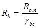
(1)
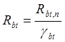
. (2)
28. Siqilishda beton boʻyicha ishonchlilik koeffitsiyenti γb ning qiymatlari quyidagilarga teng boʻlishi kerak:
birinchi guruh chegaraviy holatlar boʻyicha ogʻir, mayda donador va yengil betonlarni hisoblashda — 1,3 ga;
ikkinchi guruh chegaraviy holatlar boʻyicha hisoblashda — 1,0 ga.
29. Choʻzilishda γbt beton boʻyicha ishonchlilik koeffitsiyentining qiymatlari quyidagilarga teng boʻlishi lozim:
siqilishdagi mustahkamlik boʻyicha ogʻir, mayda donador va yengil beton sinfini belgilash hamda birinchi guruh chegaraviy holatlar boʻyicha betonlarni hisoblashda — 1,5 ga;
choʻzilishdagi mustahkamlik boʻyicha ogʻir, mayda donali va yengil beton sinfini belgilash hamda birinchi guruh chegaraviy holatlar boʻyicha betonlarni hisoblashda — 1,3 ga;
ikkinchi guruh chegaraviy holatlar boʻyicha hisoblashda — 1,0 ga.
30. Betonning siqilishga va oʻq boʻylab choʻzilish sinfiga bogʻliq ravishda (yaxlitlash bilan) uning hisobiy qarshiliklari Rb, Rbt, Rb,ser, Rbt,ser quyidagilarga muvofiq olinishi kerak:
birinchi guruh chegaraviy holatlarda — mazkur SHNQning 7 va 8-jadvallariga;
ikkinchi guruh chegaraviy holatlarda — ushbu SHNQning 6-jadvaliga.
31. Betonning mustahkamlik hisobiy qiymatlari (γbi) quyidagi koeffitsiyentlarga koʻpaytirilishi, shuningdek konstruksiyalar uchun ushbu koeffitsiyentning Rb va Rbt hisobiy qiymatlariga kiritilishi va statik yuklarning davomiy γb1 taʼsiri hisobga olinishi lozim.
32. Beton mustahkamligi xususiyatlarini aniqlashda hisobiy qiymatlardagi ishlash sharoiti γbi ni quyidagi koeffitsiyentlarga koʻpaytirilishi zarur:
sergʻovakli va gʻovakli betonlar uchun γb1 = 0,85 ga;
γb2 — hisobiy qiymatlarga qarshilik Rb kiritiladigan konstruksiyalar uchun va konstruksiyalarning buzilish xususiyatini hisobga oluvchi koeffitsiyent, γb2 = 0,9 ga;
γb3 — betonlashtirish qatlami 1,5 m dan yuqori boʻlganda vertikal holatda betonlashtiriladigan konstruksiyalar uchun beton Rb qarshiligining hisobiy qiymatlariga kiritiladi γb3 = 0,85 ga.
33. Navbatma-navbat muzlash va erish hamda manfiy haroratlar taʼsirida ishlaydigan betonning ishlash koeffitsiyentini γb5 ≤ 1,0 ga teng deb hisobga olinishi zarur.
Sovuq davrda tashqi havoning hisobiy harorati minus 40 ºS va undan yuqori boʻlgan atrof-muhitning atmosfera taʼsirlari ostida boʻladigan konstruksiyalar uchun γb5 = 1,0 koeffitsiyenti teng deb olinishi kerak.
Qolgan hollarda mazkur koeffitsiyent qiymatlari konstruksiyaning vazifasiga va atrof-muhitga bogʻliq holda texnik-iqtisodiy asoslab bajarilishi lozim.
34. Betonning asosiy deformatsiya xususiyatlari quyidagicha olinishi zarur:
εb0 va εbt0 — oʻq boʻyicha siqilish hamda choʻzilishda (betonning bir jinsli zoʻriqtirilgan holatida) betonning chegaraviy nisbiy deformatsiyalari;
Eb — boshlangʻich elastiklik moduli mazkur SHNQning 10-jadvalidan olinadi;
αbt — betonning chiziqli harorat deformatsiyalanish koeffitsiyenti.
35. Ogʻir va mayda donador betonlarning chiziqli haroratli deformatsiya qiymatlari quyidagicha qabul qilinishi kerak:
oʻq boʻyicha siqilishda εb0 — 0,002;
oʻq boʻyicha choʻzilishda εb0 — 0,0001;
36. Yuklar davomli taʼsir qilganda atrof-muhit havosining nisbiy namligiga bogʻliq holda mazkur SHNQning 9-jadvaliga muvofiq olinishi kerak.
37. Yuklar davomli taʼsir qilganda yengil betonlar uchun chegaraviy nisbiy deformatsiyalarning qiymatlari mazkur SHNQning 9-jadvali boʻyicha pasaytiruvchi koeffitsiyent [(0,4+0,6ρ/2200) ≥ 0,7] bilan (ρ — beton zichligi) olinishi lozim.
38. Betonning siljish modul qiymatlari 0,4Eb ga teng qilib qabul qilinishi kerak.
39. Yuklar davomli taʼsir qilganda betonning deformatsiya modul qiymatlari quyidagi formula boʻyicha aniqlanadi:
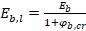
(3)
bu yerda:
φb,cr — betonning siljuvchanlik koeffitsiyenti mazkur SHNQning 40-bandidan olinadi.
40. Betonning siljuvchanlik koeffitsiyent qiymatlari φb,cr atrof-muhit sharoitlariga (havoning nisbiy namligi), beton sinfiga muvofiq boʻlishi hamda ogʻir va mayda donador betonlarning siljuvchanlik koeffitsiyentining qiymatlari ushbu SHNQning 11-jadvali boʻyicha qabul qilinishi lozim.
41. Betonning koʻndalang deformatsiyasining koeffitsiyenti vb,P = 0,2 ga teng qilib qabul qilishga yoʻl qoʻyiladi.
42. Chiziqli harorat deformatsiya koeffitsiyenti
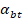
beton turiga bogʻliq holda harorat minus 40° dan plyus 50 °S gacha oʻzgarganda quyidagilarga teng qabul qilinishi kerak:
mayda zich toʻldiruvchili ogʻir, mayda donador betonlar uchun — αbt = 1•10-5 ºC-1;
mayda gʻovakli toʻldiruvchili yengil betonlar uchun — αbt = 0,7•10-5 ºC-1.
2-§. Kompozit armaturaga talablar
43. Konstruksiyalarni armaturalash uchun GOST 31938-2012ga muvofiq kompozit armaturaning quyidagi turlarini qabul qilish kerak:
shisha kompozitlik;
bazalt kompozitlik;
uglekompozitli.
44. Kompozit armaturaning 6, 8, 10, 12, 14, 16, 18, 20, 22, 25 mm dagi nominal diametrlaridan kompozit polimer armatura va armaturalangan beton konstruksiyalarning fizik-mexanik xususiyatlarini hisoblash uchun foydalanish kerak.
Kompozit armaturani boshqa nominal diametrlarda tayyorlashga bu diametrlarning GOST 31938-2012 ga muvofiq bajarilishiga yoʻl qoʻyiladi.
45. Beton konstruksiyalarni armaturalash uchun davriy profilli kompozit polimerli armatura GOST 31938-2012 ga muvofiq qoʻllanilishi, shuningdek ankerlanadigan qatlamining konfiguratsiyasiga bogʻliq ravishda kompozit polimerli armatura quyidagi turlarga boʻlinishi kerak:
kuchni qabul qiladigan sterjenga oʻzliksiz tolani yoki chilvir (jgut) oʻrash bilan hosil qilingan davriy profilli armaturaga;
davriy koʻndalang boʻrtmalarni ezish bilan hosil qilingan davriy profilli armaturaga;
46. 1 m uzunlikdagi kompozit armaturaning nominal ogʻirligi shisha va bazalt kompozitlilar uchun nominal diametrlarni hisobga olgan holda uglekompozitlilar uchun hisobiy zichligi 1700 kg/m3 dan hamda 2050 kg/m3 dan kam boʻlmasligi kerak.
47. Kompozit armaturaning asosiy mustahkamlik va deformatsiya xususiyatlarida quyidagi normativ qiymatlar qoʻllanilishi kerak:
choʻzilishga koʻrsatiladigan qarshilik Rƒ,n;
elastiklik moduli Eƒ,n;
chegaraviy nisbiy deformatsiyalar Ɛƒu,n;
chiziqli harorat deformatsiya koeffitsiyenti αƒt,n.
6-jadval
Turi
Beton
Betonning normativ qarshiliklari Rb,n, Rbt,n, MRa, va ikkinchi guruh chegaraviy holatlar uchun hisobiy qarshiliklari Rb,ser va Rbt,ser, MRa, bunda betonni siqilishdagi mustahkamlik boʻyicha
V5
V7,5
10
V12,5
B15
V20
V25
B0
V35
V40
V45
V50
V55
V60
Oʻq boʻylab siqilishga (prizmatik mustahkamlik)
Rb,n va Rb,ser
Mayda donador
3,5
5,5
7,5
9,5
11
15
18,5
22
25,5
29
32
36
39,5
43
Yengil
3,5
5,5
7,5
9,5
11
15
18,5
22
25,5
29
-
-
-
-
Oʻq boʻyicha choʻzilishga
Rbt,n i Rbt,ser
Ogʻir, mayda donador
0,55
0,7
0,85
1,00
1,10
1,35
1,55
1,75
1,95
2,10
2,25
2,45
2,60
2,75
Yengil
0,55
0,7
0,85
1,00
1,10
1,35
1,55
1,75
1,95
2,10
-
-
-
-
Izoh. Yirik moduli 2,0 va undan kichik boʻlgan qum qoʻshilgan mayda donador beton uchun hamda mayda gʻovakli toʻldiruvchili yengil beton uchun hisobiy qarshiliklarning Rbt,n, Rb,ser qiymatlarini 0,8 koeffitsiyentga koʻpaytirib qabul qilish kerak.
7-jadval
Beton
Siqilish va choʻzilishda betonning boshlangʻich elastik modulining qiymatlari Eb x 10-3, MRa — siqilishdagi mustahkamlik boʻyicha beton sinflari
B5
B7,5
B10
B12,5
V15
B20
B25
B30
B35
B40
B45
B50
B55
B60
Ogʻir
13,0
16,0
19,0
21,5
24,0
27,5
30,0
32,5
34,5
36,0
37,0
38,0
39,0
39,5
Mayda donali guruhlar:
A — tabiiy qotadigan
10,0
13,5
15,5
17,5
19,5
22,0
24,0
26,0
27,5
28,5
-
-
-
-
B — avtoklavli qotadigan
-
-
-
-
16,5
18,0
19,5
21,0
22,0
23,0
23,5
24,0
24,5
25,0
D800
5,0
5,5
-
-
-
-
-
-
-
-
-
-
-
-
D1000
6,3
7,2
8,0
8,4
-
-
-
-
-
-
-
-
-
-
D1200
7,6
8,7
9,5
10,0
10,5
-
-
-
-
-
-
-
-
-
D1400
8,8
0,0
11,0
11,7
12,5
13,5
14,5
15,5
-
-
-
-
-
-
D1600
10,0
11,5
12,5
13,2
14,0
15,5
16,5
17,5
18,0
-
-
-
-
-
D1800
11,2
13,0
14,0
14,7
15,5
17,0
18,5
19,5
20,5
21,0
-
-
-
-
D2000
-
14,5
16,0
17,0
18,0
19,5
21,0
22,0
23,0
23,5
-
-
-
-
Izoh:1. Atmosfera bosimida issiq ishlov berilgan mayda donador betonning A guruhi uchun betonning boshlangʻich elastik modulining qiymatlarini 0,89 koeffitsiyent bilan qabul qilinishi kerak.
2. Zichlikning oraliq qiymatlarida yengil beton uchun beton boshlangʻich elastik modulining qiymatlarini chiziqli interpolyatsiya boʻyicha qabul qilinadi.
8-jadval
Qarshilik turi
Beton
Oʻq boʻylab choʻzilishdagi mustahkamlik Vt boʻyicha beton sinfida birinchi guruh chegaraviy holatlar uchun betonning hisobiy qarshiliklari Rbt, MRa
Bt 0,8
Bt1,2
Bt1,6
Bt2,0
Bt2,4
Bt2,8
Bt3,2
Oʻq boʻylab choʻzilishda Rbt
Ogʻir, mayda donador va yengil
0,62
0,93
1,25
1,55
1,85
2,15
2,45
9-jadval
Atrof-muhit havosining nisbiy namligi, %
Yuklar davomli taʼsir qilganda ogʻir va mayda donador betonlarning nisbiy deformatsiyalari
siqilishda
choʻzilishda
εb0 ·103
εb2 ·103
εbl,red ·103
εbt0 ·103
εbt0 ·103
εbtl,red ·103
75 dan yuqori
3
4,2
2,4
0,21
0,27
0,19
40 — 75
3,4
4,8
2,8
0,24
0,31
0,22
40 dan past
4
5,6
3,4
0,28
0,36
0,26
10-jadval
Turi
Beton
Siqilishdagi mustahkamlik boʻyicha beton sinflarining birinchi guruh chegaraviy holatlar uchun betonning hisobiy qarshiliklari Rb, Rbt, MRa
V5
V7,5
V10
V12,5
V15
V20
V25
V30
V35
V40
V45
V50
V55
V60
Oʻq boʻylab siqilishda (prizmatik mustahkamlik)
Rb
Ogʻir, mayda donador
2,8
4,5
6,0
7,5
8,5
11,5
14,5
17,0
19,5
22,0
25,0
27,5
30,0
33,0
Yengil
2,8
4,5
6,0
7,5
8,5
11,5
14,5
17,0
19,5
22,0
-
-
-
-
Oʻq boʻylab choʻzilishda
Rbt
Ogʻir, mayda donador
0,37
0,48
0,56
0,66
0,75
0,90
1,05
1,15
1,30
1,40
1,50
1,60
1,70
1,80
Yengil
0,37
0,48
0,56
0,66
0,75
0,90
1,05
1,15
1,30
1,40
-
-
-
-
Izoh. Yiriklik moduli 2,0 va undan kichik boʻlgan qum qoʻshilgan mayda donador beton uchun hamda mayda gʻovakli toʻldiruvchili yengil beton uchun hisobiy qarshiliklarning Rbt qiymatlarini 0,8 koeffitsiyentga koʻpaytirib qabul qilish kerak.
11-jadval
Atrof-muhit havosining nisbiy namligi, %
Siqilish boʻyicha ogʻir beton sinfida betonning siljuvchanlik koeffitsiyentining φb,cr qiymati
V10
V15
V20
V25
V30
V35
V40
V45
V50
V55
V60
75 dan yuqori
2,8
2,4
2,0
1,8
1,6
1,5
1,4
1,3
1,2
1,1
1,0
40 — 75
3,9
3,4
2,8
2,5
2,3
2,1
1,9
1,8
1,6
1,5
1,4
40 dan past
5,6
4,8
4,0
3,6
3,2
3,0
2,8
2,6
2,4
2,2
2,0
Izoh:
1. Atrof-muhit havosining nisbiy namligi SHNQ 2.01.01-22 boʻyicha qurilish hududi uchun eng issiq oyning oʻrtacha oylik nisbiy namligi sifatida qabul qilinishi lozim.
2. Yengil betonlarning siljuvchanlik koeffitsiyentining qiymatini 0,8 pasaytirilgan koeffitsiyent bilan mazkur SHNQning 11-jadvaldan qabul qilish kerak.
48. Kompozit armaturani GOST 31938-2012ga muvofiq namunalarni sinash natijalari boʻyicha 0,95 taʼminlanganligi (ishonchlilik) quyidagi qiymatlarni aniqlashi kerak:
choʻzilishga koʻrsatiladigan qarshiligi — Rƒ,n;
elastiklik moduli — Eƒ,n;
chegaraviy nisbiy deformatsiyalar — Ɛƒu,n;
49. Kompozit armaturaning har xil turlari mustahkamlik va deformatsiya xususiyatlarining normativ koʻrsatkichlari quyidagi 12-jadvalda keltirilgan qiymatlardan yuqori boʻlmasligi lozim.
12-jadval
Koʻrsatkichlar nomi
shisha kompozitlik
bazalt kompozitlik
uglekompozitli
6 ≤ d ≤ 16
16
6 ≤ d≤ 16
16
Choʻzilishdagi mustahkamlik chegarasi, Rƒ,n (MRa)
1000
800
1000
800
1400
Choʻzilishdagi elastiklik moduli, Eƒ,n (GRa)
50
40
50
40
130
Chegaraviy nisbiy deformatsiyalar, Ɛƒu,n
0,02
0,02
0,02
0,02
0,017
50. Kompozit armaturaning elastiklik modulining Eƒ hisobiy qiymati uning normativ qiymatiga teng qabul qilinishi kerak.
51. Kompozit armaturaning choʻzilishga koʻrsatadigan qarshiligining hisobiy qiymatini Rƒ quyidagiga teng qilib qabul qilish lozim:
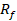
=
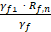
, (4)
bu yerda:
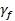
— material boʻyicha ishonchlilik koeffitsiyentini hisoblashda quyidagicha qabul qilinadi:
birinchi guruh chegaraviy holatlar boʻyicha — 1,3 ga teng;
ikkinchi guruh chegaraviy holatlar boʻyicha — 1,0 ga teng;
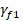
— konstruksiyaning foydalanish sharoiti va yukning davomiy taʼsir qilishini hisobga oluvchi koeffitsiyentning qiymatlari quyidagi 13-jadvalga asosan qabul qilinishi kerak.
13-jadval
Konstruksiyaning foydalanish sharoiti va
yukning davomiy taʼsirini hisobga oluvchi koeffitsiyent
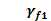
Kompozit armaturaning turlari
shisha kompozitlik armatura
bazalt kompozitlik armatura
uglekompozitli armatura
Ichki xonalarda
0,8
0,9
1,0
Ochiq havo va
grunt ichida
0,7
0,8
1,0
52. Kompozit armaturaning choʻzilishga koʻrsatadigan qarshilik Rƒ qiymatlari quyidagicha qabul qilinadi:
birinchi guruh chegaraviy holatlar uchun (yaxlitlangan holda) mazkur SHNQning 15-jadvali boʻyicha;
ikkinchi guruh chegaraviy holatlar uchun (Rƒ,ser) ushbu SHNQning 14-jadvali boʻyicha.
14-jadval
Armaturaning turi
Armaturaning nominal diametri, mm
Ikkinchi guruh chegaraviy holatlar uchun
armaturaning choʻzilishga koʻrsatadigan qarshiligining
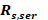
hisobiy qiymatlari, MPa
konstruksiyalarning foydalanish sharoitlari
va yukning davomiy taʼsir qilishi
ichki xonalarda
ochiq havo va grunt ichida
shisha kompozitlik armatura
4 — 25
640
560
bazalt kompozitlik armatura
720
640
uglekompozitli armatura
1400
1400
15-jadval
Armaturaning turi
Armaturaning nominal diametri, mm
Birinchi guruh chegaraviy holatlar uchun
armaturaning choʻzilishga koʻrsatadigan qarshiligining
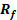
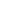
hisobiy qiymatlari, MRa
konstruksiyalarning foydalanish sharoitlari
va yukning davomiy taʼsir qilishi
ichki xonalarda
ochiq havoda va grunt ichida
shisha kompozitlik armatura
4 — 25
490
460
bazalt kompozitlik armatura
550
490
uglekompozitli armatura
1070
1070
53. Kompozit armaturaning siqilishga koʻrsatadigan qarshiligining hisobiy qiymati nolga teng qilib qabul qilish kerak.
taʼsiriga hisoblashda 200 MRa dan yuqori boʻlmagan qiymatda boʻlishi kerak.
55. Kompozit armaturaning chegaraviy nisbiy deformatsiyalarning hisobiy qiymatini quyidagiga teng qilib qabul qilish lozim:
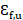
= . (5)
6-bob. Oldindan zoʻriqtirilmagan kompozit polimer armaturali konstruksiyalarga qoʻyiladigan talablar
1-§. Konstruksiyalarni hisoblash
56. Konstruksiyalarni eguvchi holatlar va boʻylama kuchlar (markaz tashqarisidan siqilgan va choʻzilish) taʼsiriga boʻlgan mustahkamlikka hisoblar boʻylama oʻqiga nisbatan normal boʻlgan kesimlar uchun amalga oshirilishi kerak.
57. Kesimning yuqori va pastki qirralarida joylashgan kompozit polimer armaturali toʻgʻri burchakli, tavrli hamda ikki tavrli kesimli konstruksiyalar, shuningdek toʻgʻri burchakli, dumaloq va halqali koʻndalang kesimli siqilgan konstruksiyalarning normal kesimlarning mustahkamligi boʻyicha hisob-kitobda chegaraviy zoʻriqishlarni amalga oshirishga yoʻl qoʻyiladi.
58. Konstruksiyalarning normal kesimlari mustahkamlilik boʻyicha chegaraviy zoʻriqishda yoriqlar hosil boʻlishi boʻyicha chegaraviy zoʻriqishdan 50 foizdan yuqori boʻlishi lozim.
2-§. Normal kesimlarning chegaraviy kuchlar boʻyicha mustahkamlikka hisoblash
59. Konstruksiyalarning normal kesimlarining mustahkamligi boʻyicha chegaraviy zoʻriqishlar boʻyicha hisoblash quyidagilardan kelib chiqqan holda beton va kompozit polimerli armaturani normal kesimining qabul qilishi mumkin boʻlgan chegaraviy kuchlarni aniqlash orqali amalga oshirilishi kerak:
betonning choʻzilishga koʻrsatadigan qarshiligi nolga teng deb;
betonning siqilishga koʻrsatadigan qarshiligi betonning siqilishga nisbatan hisobiy qarshiligiga teng va betonning shartli siqilish zonasi balandligi boʻyicha bir tekis taqsimlangan zoʻriqishlarni qabul qilish.
60. Normal kesimlarning mustahkamligi boʻyicha hisoblash betonning siqilgan zonasi nisbiy balandligining tegishli muvozanat sharoitlaridan chegaralanadigan qiymati = va siqilgan zonasi nisbiy balandligining chegaraviy qiymati
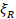
oʻrtasidagi munosabatga bogʻliq holda amalga oshirilishi, bunda konstruksiyaning chegaraviy holati
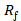
choʻzilgan kompozit polimer armaturada
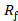
hisobiy qarshilikka teng boʻlgan kuchlanishga erishish bilan bir vaqtda boʻlishi lozim.
ning qiymatini quyidagi formula boʻyicha aniqlash lozim:
=
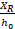
=
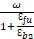
, (6)
bu yerda:
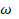
— betondagi siqilgan zonasining, uning qiymati sinfi V60 gacha boʻlgan ogʻir betonlar uchun 0,8 ga teng qilib, mayda donali va yengil betonlar uchun esa 0,7 ga teng qilib qabul qilinadi;
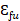
— kompozit armaturaning chegaraviy nisbiy deformatsiyalarining hisobiy qiymati mazkur SHNQning 5-formulasida keltirilgan hisoblarga koʻra aniqlanishi lozim;
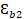
— siqilgan betonning
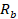
zoʻriqishlar yuzaga kelgan vaqtdagi chegaraviy nisbiy deformatsiyasi boʻlib, siqilishga nisbatan mustahkamligi V60 va undan past boʻlgan betonlar uchun 0,0035 ga teng qilib qabul qilinadi.
3-§. Egiladigan elementlarning hisoblashi
61. Egiladigan elementlar kesimlarining mustahkamligi boʻyicha hisoblashni quyidagi shartdan kelib chiqqan holda bajarish kerak:
M≤
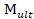
, (7)
bu yerda:
M — tashqi yuklar taʼsiridan yuzaga keladigan eguvchi moment;
— chegaraviy eguvchi moment boʻlib, bu moment element kesimi tomonidan qabul qilinadi.
62. Toʻgʻri toʻrtburchak shaklning koʻndalang kesimida boʻlgan mazkur SHNQning 1-rasmida keltirilgan egiluvchi konstruksiyalar uchun ning qiymati = ≤
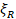
da quyidagi formuladan aniqlanadi:
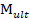
= ∙b∙x(-0.5x) (8)
bu yerda, x — siqilgan zonaning balandligi:
x =
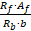
. (9)
63. Siqilish zonasida tokchaga ega boʻlgan egiluvchi (tavr va qoʻshtavrli) konstruksiyalar uchun = ≤
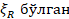
da ning qiymati siqilgan zona chegarasining holatiga bogʻliq ravishda aniqlanadi, bunda:
agar chegara tokcha ichidan oʻtsa mazkur SHNQning 2a-rasmida keltirilgan quyidagi shart bajarilishi zarur:
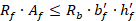
(10)
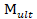
ning qiymati mazkur SHNQning 62-bandi boʻyicha toʻgʻri toʻrtburchak kesimli (eni ga teng boʻlgan) konstruksiyalarga koʻra aniqlanadi.
Chegara qovurgʻa ichidan oʻtsa mazkur SHNQning 2b-rasmida keltirilgan, ushbu SHNQning 7 sharti taʼminlamasa, bunda ning qiymati quyidagi formula boʻyicha hisoblab topilishi kerak:
= ∙b∙x(‒0.5x)+(‒b)∙
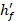
∙(‒0.5∙), (11)
bunda, betonning siqilish zonasining balandligi x quyidagi formula boʻyicha aniqlanishi kerak:
x=
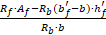
. (12)
64. Hisoblash formulasiga kiritiladigan qiymati polkaning osma qismining eni qovurgʻa elementning qirrasidan har ikki tomonga boʻlgan oraliq qismining 1/6 qismidan oshmasligi va quyidagi shartlardan kelib chiqqan holda qabul qilinishi kerak:
koʻndalang qovurgʻalar boʻlganda yoki
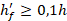
da — ½ boʻylama qovurgʻalar orasidagi masofa;
koʻndalang qovurgʻalar boʻlmasa (yoki ular orasidagi masofa boʻylama qovurgʻalar orasidagi masofaga qaraganda katta boʻlganda) va
66. Konstruktiv yechimlarga koʻra yoki ikkinchi guruh chegaraviy holatlar boʻyicha hisoblashdan kelib chiqqan holda choʻzilgan armaturaning yuzasi x ≤ shart bajarilishi uchun talab qilingandan katta qilib qabul qilingan boʻlsa, bunda chegaraviy eguvchi moment ni mazkur SHNQning 5 yoki 8-formulalari boʻyicha hisoblab topishga yoʻl qoʻyiladi, ularga x ≤ siqilgan zona balandligining qiymati qoʻyilishi zarur.
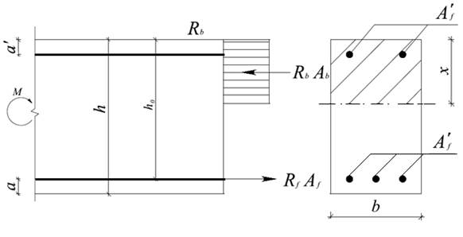
1-rasm. Egiluvchi konstruksiyani mustahkamlikka hisoblashda kuchlar sxemasi va egiladigan konstruksiya boʻylama oʻqiga normal yoʻnalgan kesimlarda yuzaga keladigan zoʻriqishlar epyurasi
4-§. Markaz tashqarisidan siqilgan konstruksiyalarni hisoblash
67. Toʻgʻri toʻrtburchak shaklning koʻndalang kesimida boʻlgan markaz tashqarisidan siqilgan konstruksiyalarni hisoblash quyidagicha bajarilishi lozim:
N∙e≤
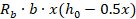
, (13)
bu yerda:
N — tashqi yuk taʼsiridan hosil boʻladigan boʻylama kuch;
e — boʻylama kuch N qoʻyilgan nuqtadan choʻzilgan armatura kesimining ogʻirlik markazigacha boʻlgan masofa:
e =
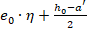
, (14)
bu yerda:
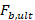
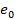
— ehtimoliy ekssentrisitet boʻlib, u quyidagilardan kam boʻlmagan qiymatlarda qabul qilinadi:
1/600 element uzunligi yoki elementning koʻchishga qarshi mahkamlangan kesimlari orasidagi masofa;
1/30 kesim balandligi;
10 mm.
— elementning boʻylama egilishi (salqiligi) uning yuk koʻtarish qobiliyatiga koʻrsatadigan taʼsirini hisobga oluvchi koeffitsiyent mazkur SHNQning 69-bandiga muvofiq aniqlanishi kerak.
68. Siqilgan zonaning balandligi x quyidagicha aniqlanadi:
= ≤ da quyidagi 15-formula boʻyicha aniqlanadi:
x =
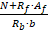
; (15)
= >da quyidagi 16-formula boʻyicha aniqlanadi:
x =
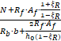
. (16)
69. Koeffitsiyentning η qiymati quyidagi 17-formula boʻyicha aniqlanadi:
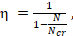
(17)
bu yerda:
N — tashqi yuklar taʼsiridan yuzaga keladigan boʻylama kuch;
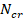
— shartli kritik kuch quyidagi 18-formula boʻyicha aniqlanadi:
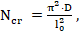
(18)
bu yerda:
— konstruksiyaning mustahkamlik boʻyicha chegaraviy darajasidagi bikrligi;
— konstruksiyaning hisobiy uzunligi mazkur SHNQning 70-bandiga muvofiq aniqlanadi:
3-rasm. Kuchlar sxemasi va markaz tashqarisida siqilgan konstruksiyaning boʻylama oʻqiga normal yoʻnalgan kesimda yuzaga keladigan zoʻriqishlar epyurasi
D ning qiymatini quyidagi 19-formula boʻyicha aniqlanadi:
D = , (19)
— betonning elastiklik moduli;
— konstruksiyaning koʻndalang kesim yuzasining uning ogʻirlik markazidan oʻtuvchi oʻqqa nisbatan inersiya momenti;
— yuklar taʼsiri davomiyligining taʼsir qilishini hisobga oluvchi koeffitsiyent:
≤ 2 ,
bu yerda:
— toʻliq yuklanish taʼsiridan hamda doimiy va davomiy (uzoq vaqt taʼsir qiluvchi) yuklar taʼsiridan mos ravishda yuzaga keladigan eng koʻp choʻzilgan yoki kam siqilgan sterjen koʻndalang kesimining markaziga nisbatan momentlar;
— boʻylama kuchning nisbiy ekssentrisiteti , uning qiymati 0,15 dan kichik boʻlmagan va 1,5 dan katta boʻlmagan qiymatlarda qabul qilinadi.
70. Ramali konstruksiya elementlarning markaz tashqarisidan siqilgan elementning hisobiy uzunligi konstruksiyaning deformatsiyalangan holatini hisobga olgan holda hamda mazkur element uchun yuklarning eng noqulay joylashgan holatda aniqlanishi, bunda materiallarning elastik boʻlmagan deformatsiyalari va yoriqlar mavjudligini eʼtiborga olish kerak.
71. Boʻylama kuchlar taʼsir qilganda uzunligi boʻyicha koʻndalang kesimi oʻzgarmaydigan, uzunligiboʻylab doimiy koʻndalang kesimlarga ega boʻlgan elementlarning hisobiy uzunligini quyidagilarga teng qilib qabul qilish kerak:
ikkita uch tomoniga sharnirli tayangan elementlar uchun — 1,0 ;
bitta uchi bikr qilib mahkamlangan (tayanch kesimning burilishiga yoʻl qoʻymaydigan) va ikkinchi uchi mahkamlanmagan (konsol) elementlar uchun — 2,0 ;
bir uchi sharnirli va koʻchmas tayanch bilan mahkamlangan, ikkinchi uchi esa bikr (burilmas) qilib mahkamlangan elementlar uchun — 0,7;
bir uchi sharnirli va koʻchmas tayanch bilan mahkamlangan, ikkinchi uchi esa burilishga moyil holatda (chegaralangan burilishga yoʻl qoʻyadigan qilib) mahkamlangan elementlar uchun 0,9;
bir uchida burilishga moyil sharnirli tayanch (tayanchning chegarali siljishiga yoʻl qoʻyadigan), ikkinchi uchida bikr mahkamlangan (burilmas) elementlar uchun — 1,5 ;
bir uchida burilishga moyil sharnirli tayanchga ega boʻlgan, ikkinchi uchida burilishga moyil (chegaralangan burilish bilan) qistirib mahkamlangan elementlar uchun — 2,0;
ikki uchida koʻchmas mahkamlanishda ega boʻlgan elementlar uchun — (burilmaydigan bikr) 0,5;
ikki uchi burilishga moyil holda (chegaralangan burilish bilan) qistirib mahkamlangan elementlar uchun — 0,8 ;
ikki uchi chegaralangan siljish bilan qistirib (bikr va burilishsiz) mahkamlangan elementlar uchun — 0,8 ;
ikki uchi chegaralangan siljish bilan qistirib (moyil va chegaralangan burilish bilan) mahkamlangan elementlar uchun — 1,2 .
5-§. Markaziy choʻzilgan konstruksiyalarni hisoblash
72. Markaziy choʻzilgan konstruksiyalarni mustahkamlikka hisoblashda quyidagicha bajarilishi kerak:
N ≤ , (20)
bu yerda:
N — tashqi yuklar taʼsirida yuzaga keladigan boʻylama choʻzuvchi kuch;
— konstruksiya tomonidan qabul qilinishi mumkin boʻlgan boʻylama kuchning chegaraviy qiymati.
kuchning qiymati quyidagi 21-formula boʻyicha aniqlanadi:
= , (21)
bu yerda — butun boʻylama kompozit armatura kesimining yuzasi.
6-§. Markaz tashqarisidan choʻzilgan konstruksiyalarni hisoblash
73. Markaz tashqarisidan choʻzilgan konstruksiyalarning toʻgʻri burchakli kesimlarining mustahkamligi boʻyicha hisoblash boʻylama kuchning N holatiga koʻra amalga oshirilishi kerak:
Agar boʻylama kuch N armaturada S va S' teng taʼsir etuvchi kuchlar orasida qoʻyilgan boʻlsa (mazkur SHNQning 4a-rasmida keltirilgan) quyidagi hisob boʻyicha bajarilishi lozim:
N∙e ≤ ; (22)
N∙e' ≤, (23)
bu yerda:
N∙e va N∙e' — tashqi yuklar taʼsirida yuzaga keladigan kuchlar;
va — chegaraviy kuchlar (zoʻriqishlar) boʻlib, ular kesim tomonidan qabul qilinishiga yoʻl qoʻyiladi.
, va kuchlar quyidagi 24 va 25-formulalar boʻyicha aniqlanadi:
= ; (24)
= ; (25)
Agar boʻylama kuch N armaturadagi S va S' (4b-rasm) teng taʼsir qiluvchi kuchlar oʻrtasidagi oraliqdan tashqariga qoʻyilgan boʻlsa, mazkur SHNQning 22-formulasidan kelib chiqqan holda chegaraviy moment quyidagi formula boʻyicha aniqlanadi:
= , (26)
Bunda, choʻzilgan zonaning balandligi x quyidagi formuladan aniqlanadi:
x = . (27)
Agar x mazkur SHNQning 27-formulasi boʻyicha hisoblab topilgan qiymatlardan katta boʻlsa, bunda mazkur SHNQning 26-formulasiga x = qoʻyiladi, hamda ning qiymati mazkur SHNQning 6-bobiga muvofiq aniqlanadi.
74. Koʻndalang kuchlar taʼsir qilganda konstruksiyalarni mustahkamlikka hisoblashni koʻndalang kuchlarning qiya kesim taʼsiri boʻyicha, eguvchi momentning qiya tekislikka taʼsiri boʻyicha va koʻndalang kuchning qiya kesimlar orasidagi chiziqqa taʼsiri boʻyicha bajarilishi kerak.
75. Egiluvchan konstruksiyalarni qiya kesimlar orasidagi beton chizigʻi boʻyicha hisoblash SHNQ 2.03.01-24 hamda quyidagi 28-formula boʻyicha amalga oshirilishi lozim:
Q ≤ 0.3∙ Rb ∙b∙, (28)
bu yerda, Q — konstruksiyaning normal kesimidagi boʻylama kuchi.
7-§. Konstruksiyani qiya kesimlar boʻyicha koʻndalang kuchlar taʼsiriga hisoblash
76. Egiluvchi konstruksiyalarning koʻndalang kesim boʻyicha hisoblari quyidagicha aniqlanishi lozim:
Q ≤ , (29)
bu yerda:
Q — konstruksiyaning boʻylama oʻqiga tushadigan proyeksiyasining uzunligi S boʻlgan qiya kesimdagi koʻndalang kuch boʻlib, bu kuchning qiymati qiya kesimdan bir tomonda joylashgan barcha tashqi kuchlar taʼsiridan aniqlanishi, bunda qiya kesimdagi eng xavfli yuklar hisobga olinishi lozim;
— beton tomonidan qiya kesimda qabul qilinadigan koʻndalang kuch;
— kompozit armaturaning koʻndalang tomoni qiya kesimida qabul qilinadi.
4-rasm. Boʻylama kuch N armaturadagi S va S' teng taʼsir qiluvchi kuchlar orasiga (a) qoʻyilganda va boʻylama kuch N armaturadagi S va S' teng taʼsir qiluvchi kuchlar orasidagi masofadan tashqariga (b) qoʻyilganda konstruksiyani mustahkamlikka hisoblashdagi kuchlar sxemasi va markaz tashqarisidan choʻzilgan konstruksiyaning boʻylama oʻqiga normal yoʻnalgan kesimdagi zoʻriqishlar epyurasi
77. Koʻndalang kuch quyidagi 30-formula boʻyicha aniqlanadi:
, (30)
biroq, 2.5 dan katta boʻlmagan va 0.5 dan kichik boʻlmagan qiymatda qabul qilinadi.
5-rasm. Qiya kesim boʻyicha konstruksiyalarni koʻndalang kuchlar taʼsiriga hisoblashda kuchlar sxemasi
Konstruksiyaning boʻylama oʻqiga normal yoʻnalgan koʻndalang kompozit armatura uchun kuch quyidagi 31-formula boʻyicha aniqlanadi:
, (31)
bu yerda:
— 0,75 ga teng qilib qabul qilinadigan koeffitsiyent;
— konstruksiya uzunlik birligidagi koʻndalang armaturada yuzaga keladigan ichki kuch boʻlib, uning qiymati quyidagiga teng:
. (32)
konstruksiya uzunligi boʻyicha joylashgan bir qator qiya kesimlarni hisoblash uchun qiya kesim proyeksiyasining S eng xavfli uzunligida olinadi.
Mazkur SHNQning 31-formuladagi proyeksiyasining S uzunligi 1,0 dan kichik boʻlmagan va 2,0 dan katta boʻlmagan uzunlikda qabul qilinadi.
Hisoblarda koʻndalang armaturani, quyidagi shart bajarilsa ≥ 0,25∙b hisobga olish lozim.
Koʻndalang armaturani hisoblashda hisobga olinadigan qadam , quyidagi qiymatdan katta boʻlmasligi lozim:
bu yerda, .
78. Koʻndalang armatura qoʻyilmagan boʻlsa yoki ushbu SHNQning 77-bandida keltirilgan shartlar bajarilmaganda hisoblar 26-shartdan kelib chiqqan holda kuch (zoʻriqish kuchi)ni nolga teng deb qabul qilish kerak.
79. Koʻndalang armaturani mazkur SHNQning 9-bobida keltirilgan konstruktiv talablarga muvofiq boʻlishi lozim.
8-§. Konstruksiyalarni qiya kesimlar boʻyicha eguvchi momentlar taʼsiriga hisoblash
80. Konstruksiyalarni qiya kesimlar boʻyicha momentlar taʼsiriga hisoblash quyidagicha bajariladi:
M≤ , (33)
bu yerda:
M — konstruksiya boʻylama oʻqidagi proyeksiyasining uzunligiga S teng boʻlgan qiya kesimdagi moment boʻlib, bu moment koʻndalang kesimdan bir tomonda joylashgan barcha tashqi kuchlardan qiya kesim oxirgi nuqtasiga (0 nuqta) nisbatan aniqlanadi, bu kesimning qarama-qarshi oxirgi nuqtasiga nisbatan tekshirilayotgan boʻylama kompozit armatura joylashtiriladi, armatura moment taʼsiridan qiya kesimda yuzaga keladigan choʻzilishni qabul qiladi, bunda qiya kesim chegarasidagi eng xavfli yuklar hisobga olinadi;
— qiya kesimni kesib oʻtuvchi boʻylama kompozit armatura tomonidan qabul qilinadigan kesimning qarama-qarshi oxirgi nuqtasiga (0 nuqta) nisbatan olingan moment;
— qiya kesimni kesib oʻtuvchi koʻndalang kompozit armatura tomonidan qabul qilinadigan kesimning qarama-qarshi oxirgi nuqtasiga (0´ nuqta) nisbatan olingan moment quyidagi formuladan aniqlanadi:
, (34)
bu yerda:
— boʻylama choʻzilgan kompozit armaturada yuzaga keladigan kuch boʻlib, bu kuch ga teng qilib qabul qilinadi, ankerlash zonasi;
— ichki juftning kuchlarning yelkasiga =0.9 teng qilib qabul qilishga yoʻl qoʻyiladi.
81. Elementning boʻylama oʻqiga normal yoʻnalgan koʻndalang kompozit armatura uchun moment quyidagi 35-formuladan aniqlanadi:
, (35)
bu yerda:
— koʻndalang kompozit armaturada yuzaga keladigan kuch boʻlib, bu kuch ga teng qilib qabul qilinadi;
— mazkur SHNQning 35-formulasiga koʻra hisoblab topiladi, S ning qiymati 1,0 2,0 gacha boʻlgan oraliqda qabul qilinadi.
82. Elementning oxirgi maydonlaridagi uzunligi boʻyicha va boʻylama kompozit armaturaning uzilgan joylarida joylashgan qiya kesimlar uchun hisoblash qiya kesim proyeksiyasining S eng xavfli uzunligida olib boriladi, S ning qiymati 1,0 2,0 gacha boʻlgan chegaraviy oraliqlarda qabul qilinadi.
6-rasm. Konstruksiyalarni qiya kesim boʻyicha momentlar taʼsiriga hisoblashda kuchlar sxemasi
83. Qiya kesim boʻyicha momentlar taʼsiriga hisoblashda hisobiy koʻndalang armaturalashni talab etadigan konstruksiyalar uchun koʻndalang armatura sifatida poʻlat armaturani SHNQ 2.03.01-24ga muvofiq qoʻllashga yoʻl qoʻyiladi.
9-§. Konstruksiyalarni muayyan joydagi siqilishga nisbatan hisoblash
84. Kompozit armaturali konstruksiyalarni muayyan joydagi siqilishga (ezilishga) hisoblash chegaralangan element yuzasiga normal yoʻnalishda qoʻyilgan siquvchi kuch taʼsir qilganda bajariladi.
Bunda, yuklanish yuzasining chegarasi ichida betonning siqilishga yuqori qarshilik koʻrsatishi hisobga olinishi hamda bu qarshilik yuklanish yuzasining element sirtida qanday joylashishiga bogʻliq holda aniqlanadi.
85. Qiya holatda joylashgan armatura mavjud boʻlgan vaziyatda siqilish zonasida betonning siqilishga qarshi qoʻshimcha yuqori qarshiligini hisobga olish lozim.
86. Qiya holatda joylashadigan armatura boʻlmaganda elementlarni siqilishga hisoblash mazkur SHNQning 87-bandiga muvofiq olib borilishi, qiya joylashadigan armatura mavjud boʻlgandagi hisoblar esa 88-bandga muvofiq bajarilishi kerak.
87. Qiya holatda joylashgan armatura mavjud boʻladigan vaziyatda mazkur SHNQning 7-rasmida keltirilgan elementlarning muayyan joydagi siqilishga nisbatan hisoblash quyidagi shartdan kelib chiqqan holda aniqlanadi:
, (36)
bu yerda:
— tashqi kuchlar taʼsirida yuzaga keladigan muayyan joydagi siquvchi kuch;
— siquvchi kuch qoʻyiladigan muayyan joyning yuzasi (ezilish yuzasi);
— siquvchi kuchning muayyan joyga taʼsirida betonning siqilishga nisbatan koʻrsatadigan hisobiy qarshiligi;
— muayyan joydagi yuklarning ezilish yuzasi boʻyicha bir tekis taqsimlanishida 1,0 ga teng qilib qabul qilinadigan koeffitsiyent, ushbu koeffitsiyent yuklarning ezilish yuzasi boʻyicha tekis boʻlmagan taqsimlanishida 0,75 ga teng qilib qabul qilinadi.
ning qiymati quyidagi formula boʻyicha aniqlanadi:
, (37)
bu yerda, — koeffitsiyent quyidagi formula boʻyicha aniqlanadi:
, (38)
Biroq, 2,5 dan katta boʻlmagan va 1,0 dan kichik boʻlmagan qiymatlarda qabul qilinadi.
Mazkur SHNQning 38-formulasidagi quyidagi qoidalar boʻyicha oʻrnatiladigan maksimal hisobiy yuzasi:
va yuzalarning ogʻirlik markazlari ustma-ust tushadi;
mazkur SHNQning 7-rasmida keltirilgan hisobiy yuzaning chegaralari
a — element chetlaridan yiroqda; b — elementning butun eni boʻyicha; v — butun eni boʻyicha element chetki qirra qismida
g — element burchagida; d — elementning bitta qirrasiga yopishgan holatda; e — element bitta qirrasi yaqinida
7-rasm. Muayyan yuklarning joylashishida muayyan joyli siqilishga elementlarni hisoblash uchun sxemalar
1 — muayyan joydagi yuk taʼsir qiladigan element; 2 — ezilish joyining yuzasi — ; 3 — maksimal hisobiy yuza — ; 4 — va yuzalarning ogʻirlik markazlari; 5 — toʻrlar bilan armaturalanadigan minimal zona, bu zonada qiya armaturalash hisoblash vaqtida hisobga olinadi
88. Payvandlangan toʻr koʻrinishda qiya oʻrnatiladigan armatura mavjud boʻlganda elementlarni muayyan joyli siqilishga hisoblash lozim:
, (39)
bu yerda, — muayyan joydagi siqilish zonasiga oʻrnatiladigan qiya armaturani hisobga olganda betonning siqilishga nisbatan keltirilgan hisobiy qarshiligi:
. (40)
bu yerda, — koeffitsiyent quyidagi formula boʻyicha aniqlanadi:
; (41)
— qiya oʻrnatiladigan armatura toʻrlari konturi ichidagi yuzasi, bunda ularning chetki sterjenlari ham shu yuzaga kiradi va mazkur yuza ushbu SHNQning 41-formulasi boʻyicha dan kam boʻlmagan qiymatda qabul qilinadi;
— qiya armaturaning choʻzilishga nisbatan hisobiy qarshiligi;
— qiya armatura koeffitsiyenti, uning qiymati quyidagi 39-formuladan aniqlanadi:
; (42)
, , — sterjenlar soni, kesim yuzasi va toʻr sterjenining uzunligi, bunda chetki sterjenlar oʻqlaridan boshlab X yoʻnalishida oʻlchanadi;
, , — sterjenlar soni, kesim yuzasi va toʻr sterjenining uzunligi, bunda chetki sterjenlar oʻqlaridan boshlab Y yoʻnalishida oʻlchanadi;
s — qiya armatura toʻrlarining qadami.
89. Qiya holatda armaturalangan elementni qabul qiladigan muayyan joydagi siquvchi kuchning qiymati mazkur SHNQning 39-formulasining oʻng qismi boʻlib, qiya armaturalanmagan element tomonidan qabul qilinadigan muayyan joyga taʼsir qiluvchi siquvchi kuchning ikkilangan qiymatidan katta boʻlmagan qiymatda mazkur SHNQning 39-formula (tenglama)ning oʻng qismi qabul qilinadi.
90. Qiya armaturalash ushbu SHNQning 10-bobida keltirilgan konstruktiv talablarga muvofiq boʻlishi lozim.
10-§. Konstruksiyalarni bosim ostida ajralishga qarshi hisoblash
91. Koʻndalang armaturasiz yassi konstruksiyalar (plitalar)ni chegaralangan yuzaga bir tekis taqsimlangan kuchlar taʼsirida bosim ostida ajralishga qarshi hisoblash quyidagi 43-formulaga koʻra bajariladi:
, (43)
bu yerda:
— tashqi yuklar taʼsirida yuzaga keladigan toʻplangan bosuvchi kuch;
— betonni qabul qiladigan chegaraviy kuchi;
— kuch quyidagi 44-formula boʻyicha aniqlanadi:
, (44)
bu yerda, — mazkur SHNQning 8-rasmida keltirilgan toʻplangan kuch qoʻyilgan yuza chegarasidan 0,5 ga teng masofada joylashgan hisobiy koʻndalang kesim yuzasi, bu yuzaning ishchi balandligi ga teng.
8-rasm. Koʻndalang armaturasiz temir-beton elementlarni bosim ostida ajralishga qarshi hisoblash sxemasi
— kesimning keltirilgan ishchi balandligi , va lar X va Y oʻqlar yoʻnalishida joylashgan boʻylama armatura kesimining ishchi balandligi.
92. Mazkur SHNQning 9-rasmida keltirilgan koʻndalang armaturali yassi konstruksiyalarni bir tekis taqsimlangan kuchlar taʼsirida bosim ostida ajralishga qarshi hisoblash quyidagi 46-formuladan kelib chiqqan holda bajariladi:
F≤ , (46)
bu yerda:
— bosim ostida ajralishda koʻndalang armatura qabul qiladigan chegaraviy kuch;
— betonni qabul qiladigan chegaraviy kuchi boʻlib, uning qiymati ushbu SHNQning 91-bandiga muvofiq qabul qilinadi.
93. Elementning boʻylama oʻqiga normal yoʻnalgan va hisobiy koʻndalang kesim konturi boʻylab joylashgan koʻndalang armatura qabul qiladigan kuchni quyidagi formula boʻyicha hisoblash kerak:
, (47)
bu yerda, — hisobiy koʻndalang kesim konturining uzunlik birligidagi hisobiy kesim konturidan 0,5 masofada ikkala tomon boʻyicha joylashgan koʻndalang armaturada yuzaga keladigan kuch:
, (48)
bu yerda:
— hisobiy kesim konturidan 0,5 masofada ikkala tomon boʻyicha qadam bilan hisobiy koʻndalang kesim konturining perimetri boʻyicha joylashadigan koʻndalang armatura kesimining yuzasi;
— hisobiy koʻndalang kesim konturining perimetri mazkur SHNQning 91-bandiga muvofiq aniqlanadi.
yigʻindining qiymatini dan katta boʻlmagan qiymatda qabul qilishga yoʻl qoʻyiladi.
Hisoblashda ning qiymati 0,25 dan kam boʻlmaganda koʻndalang armaturani hisobga olish lozim.
94. Koʻndalang armatura mazkur SHNQning 10-bobidagi konstruktiv talablarni bajarilishini taʼminlashi lozim.
Koʻndalang armaturani ankerlash uchun sharoit taʼminlanganda, bosim ostida ajralishga qarshi hisoblashda faqat bosim ostida ajralish piramidasini kesib oʻtuvchi koʻndalang armaturani hisobga olish kerak.
9 — rasm. Vertikal holatda bir tekis taqsimlangan koʻndalang kompozit armaturali plitalarni bosim ostida ajralishiga qarshi hisoblash sxemasi
1 — hisobiy koʻndalang kesim; 2 — hisobiy koʻndalang kesim konturi; 3 — hisoblash vaqtida koʻndalang armatura hisobga olinadigan zona chegaralari; 4 — hisoblashda koʻndalang armatura hisobga olinmaganda hisobiy koʻndalang kesimning konturi; 5 — yuk qoʻyiladigan yuza konturi
11-§. Konstruksiyalarning ikkinchi guruh chegaraviy holatlar boʻyicha hisoblash
102. Yoriqlar hosil boʻlishi boʻyicha hisoblashda yoriqlar boʻlmasligini taʼminlash zarur boʻlsa, shuningdek yoriqlarning ochilishi va deformatsiyalar boʻyicha hisoblashda yordamchi hisoblash sifatida olib borilishi kerak.
103. Yoriqlarning hosil boʻlishiga yoʻl qoʻymaslik maqsadida yoriqlar hosil boʻlishi boʻyicha hisoblashda yuk boʻyicha ishonchlilik koeffitsiyenti >1,0 tengsizlik sharti bajarilishi bilan qabul qilinishi lozim.
Yoriqlar ochilishi va deformatsiyalar boʻyicha (yoriqlar hosil boʻlishi boʻyicha yordamchi hisoblashni kiritgan holda) hisoblashda yuk boʻyicha ishonchlilik koeffitsiyenti =1,0 tenglik sharti bajarilishi bilan qabul qilinishi zarur.
12-§. Konstruksiyalarni yoriqlar hosil boʻlishi va ochilishi boʻyicha hisoblash
104.Konstruksiyalarni yoriqlar hosil boʻlishi boʻyicha hisoblash quyidagi 49-formulaga muvofiq amalga oshirilishi kerak:
M (49)
bu yerda:
M — moment taʼsir qiladigan tekislikka normal yoʻnalgan oʻqqa nisbatan tashqi kuchlardan hosil boʻladigan va elementning keltirilgan koʻndalang kesimi ogʻirlik markazidan oʻtuvchi eguvchi moment;
— yoriqlar hosil boʻlganda elementning normal kesimi qabul qiladigan eguvchi moment, bu moment mazkur SHNQning 112-bandi talablar boʻyicha aniqlanadi.
105. Markaziy choʻzilgan elementlar uchun yoriqlar hosil boʻlishi quyidagi 50-formula orqali aniqlanadi:
N (50)
bu yerda:
N — tashqi yuk taʼsiridan hosil boʻladigan boʻylama choʻzuvchi kuch;
— yoriqlar hosil boʻlishida element tomonidan qabul qilinadigan boʻylama choʻzuvchi kuch, bu kuch mazkur SHNqning 116-bandiga muvofiq aniqlanadi.
106. Mazkur SHNQning 46 yoki 47-shartlari bajarilgan hollarda, yoriqlar ochilishi boʻyicha hisoblash bajarilishi lozim.
107. Yoriqlarning davom etmaydigan ochilishi doimiy va vaqtinchalik (uzoq muddatli va qisqa muddatli) yuklarning birgalikdagi taʼsiridan aniqlansa, yoriqlarning davom etadigan ochilishi esa faqat doimiy hamda vaqtinchalik uzoq muddatli yuklarning birgalikdagi taʼsiridan aniqlanadi.
108. Yoriqlar ochilishi boʻyicha hisoblash quyidagi 51-formula orqali aniqlanadi:
, (51)
bu yerda:
— tashqi yuklar taʼsiridan yoriqlarning ochilish kengligi (eni), bu kenglik mazkur SHNQning 109-bandiga muvofiq aniqlanadi;
— yoriqlar ochilishining chegaraviy yoʻl qoʻyiladigan kengligi;
ning qiymati quyidagilardan katta boʻlmagan qiymatlarda qabul qilinadi;
0,7 mm — konstruksiya normal sharoitlar (yopiq joylar) da foydalanish;
0,5 mm — yoriqlarning ochilishi davom etganda, shuningdek konstruksiyalar yuqori namlikka ega boʻlgan muhitda (ochiq havoda yoki gruntda) va agressiv muhitda foydalanishda ochilishi davom etmaydi.
109. Konstruksiyalarni normal va qiya yoriqlarning davom etadigan hamda davom etmaydigan ochilishi boʻyicha hisoblanishi kerak.
Yoriqlarning davom etadigan ochilish kengligi quyidagi 52-formula boʻyicha aniqlanishi kerak:
, (52)
yoriqlarning davom etmaydigan ochilish kengligi quyidagi 53-formula boʻyicha aniqlanadi:
, (53)
bu yerda:
— yoriqlarning doimiy va vaqtinchalik uzoq muddatli yuklarning davom etadigan taʼsiridan ochilish kengligi;
— yoriqlarning doimiy va vaqtinchalik (uzoq muddatli va qisqa muddatli) yuklarning davom etmaydigan taʼsiridan ochilish kengligi;
— yoriqlarning doimiy va vaqtinchalik uzoq muddatli yuklarning davom etmaydigan taʼsiridan ochilish kengligi;
, va larning qiymatlarini mazkur SHNQning 117-bandi boʻyicha aniqlash lozim.
13-§. Elementning boʻylama oʻqiga normal yoʻnalgan yoriqlarni hosil qiluvchi momentlarni aniqlash
110. Yoriqlar hosil boʻlishidagi eguvchi moment ushbu SHNKning 76 — 79-bandlariga muvofiq, choʻzilgan betonning elastik boʻlmagan deformatsiyasini hisobga olgan holda aniqlanishi kerak.
111. Yoriqlar hosil qiluvchi moment betonning elastik boʻlmagan deformatsiyalanishini hisobga olgan holda quyidagi holatlarga koʻra aniqlanishi lozim:
kesim deformatsiyalangandan keyin yassi holatda qolganda;
mazkur SHNQning 10-rasmida keltirilgan zoʻriqishlarning beton siqilish zonasidagi epyurasi uchburchakli shaklda qabul qilinganda;
zoʻriqishlarning beton choʻzilish zonasidagi epyurasi betonning choʻzilishga nisbatan qarshiligi ()ning hisobiy qiymatlaridan katta boʻlmagan zoʻriqishlar bilan trapetsiyasimon shaklda qabul qilinganda;
betonning chetki choʻzilgan tolasining nisbiy deformatsiyasi yuklarning =0.00015 ga teng boʻlgan qisqa muddatli taʼsirida shu deformatsiyaning chegaraviy qiymatiga teng qilib qabul qilinganda;
armaturadagi zoʻriqish nisbiy deformatsiyalarga bogʻliq holda qabul qilinganda.
112. Choʻzilgan betonning elastik boʻlmagan deformatsiyalarini hisobga olgan holda yoriqlar hosil boʻlishidagi moment (moment hosil qiluvchi) quyidagi formula boʻyicha aniqlanadi:
, (54)
bu yerda:
— betonning chetki choʻzilgan tolasi uchun kesim qarshiligining egiluvchan plastik momenti, bu moment ushbu SHNQning 114-bandiga muvofiq aniqlanadi;
— boʻylama kuch (elementning keltirilgan kesimining ogʻirlik markazida joylashgan) N ning qoʻyilish nuqtasidan choʻzilgan zonadan eng uzoqlashgan yadroviy nuqtagacha boʻlgan masofa (bu zonaning yoriq hosil qilishi tekshiriladi).
113. Boʻylama kuch siquvchi xususiyatga ega boʻlganda ushbu SHNQning 54-formulasida “plyus” ishorali belgi qabul qilinsa, boʻylama kuch choʻzuvchi xususiyatga ega boʻlganda esa “minus” ishorali belgi qabul qilinadi.
10-rasm. Eguvchi moment (a), eguvchi moment va boʻylama kuch (b) taʼsir qilganda element koʻndalang kesimidagi zoʻriqtirilgan deformatsiya holat sxemasi
114. Polkasi siqilgan zonada joylashgan toʻgʻri burchakli va tavr kesimlar uchun moment simmetriya oʻqida taʼsir qilganda ning qiymatini quyidagiga teng qilib qabul qilishga yoʻl quyiladi:
, (55)
— kesimning choʻzilgan zonasi boʻyicha keltirilgan kesim qarshiligining elastik momenti, bu moment ushbu SHNQning 115-bandiga muvofiq aniqlanadi.
115. qarshilik momenti va masofa quyidagi formulalar boʻyicha aniqlanadi:
, (56)
, (57)
bu yerda, — element keltirilgan kesimining shu kesim ogʻirlik markaziga nisbatan inersiya momenti
; (58)
I, — mos ravishda beton kesimi va kompozit armaturaning inersiya momentlari.
— elementning keltirilgan koʻndalang kesim yuzasi, bu yuza quyidagi formula boʻyicha aniqlanadi:
, (59)
— armaturani betonga keltirish koeffitsiyenti:
, (60)
— mos ravishda beton koʻndalang kesimi va choʻzilgan armaturaning yuzalari;
— betonning eng choʻzilgan tolasidan elementning keltirilgan koʻndalang kesimi ogʻirlik markazigacha boʻlgan masofa:
, (61)
bu yerda:
— element keltirilgan koʻndalang kesimining betondagi eng choʻzilgan tolasiga nisbatan statik momenti.
— qarshilik momentni kompozit armaturani hisobga olmasdan aniqlashga yoʻl quyiladi.
116. Markaziy choʻzilgan elementlarda yoriqlar hosil boʻlganda kuch quyidagi formuladan aniqlanadi:
. (62)
14-§. Element boʻylama oʻqiga normal yoʻnalgan yoriqlarning ochilish kengligini hisoblash
117. Normal yoʻnalgan yoriqlarning ochilish kengligi (eni) , (i=1,2,3 ) quyidagi 63-formula boʻyicha aniqlanadi:
, (63)
bu yerda:
— boʻylama choʻzilgan armaturaning tegishli tashqi yukdan hosil boʻlgan yoriqlarga ega boʻlgan normal yoʻnalgan kesimidagi zoʻriqish ushbu SHNQning 118-bandiga muvofiq aniqlanadi;
— yonma-yon joylashgan normal yoriqlar orasidagi bazaviy masofa mazkur SHNQning 131-bandiga muvofiq aniqlanadi;
— yoriqlar orasidagi choʻzilgan armatura nisbiy deformatsiyalarining tekis boʻlmagan tarqalishini hisobga oluvchi koeffitsiyent;
mazkur koeffitsiyentni = 1 qiymat bilan qabul qilinishi, bunda ushbu SHNQning 54-formulasidagi shart bajarilmaganda ning qiymatini ushbu SHNQning 134-bandi boʻyicha aniqlashga yoʻl quyiladi;
— yuklar taʼsirining davomiyligini hisobga oluvchi koeffitsiyent quyidagilarga teng qilib qabul qilinadi:
1.0 — yuklarning davom etmaydigan taʼsirida;
1.4 — yuklarning davom etadigan taʼsirida;
— boʻylama armaturaning profilini hisobga oluvchi koeffitsiyent 0,7 ga teng qilib qabul qilinadi;
— yuklanish xususiyatini hisobga oluvchi koeffitsiyent qiymatlari quyidagilarga teng qilib qabul qilinadi:
1,0 — egiluvchi va markaz tashqarisida siqiluvchi elementlar uchun;
1,2 — choʻzilgan elementlar uchun.
118. Egiluvchi elementlarning choʻzilgan armaturasida yuzaga keladigan zoʻriqish qiymati:
, (64)
bu yerda, , — elementning keltirilgan koʻndalang kesimi siqilgan zonasining inersiya momenti, yuzasi, ular faqat beton siqilgan zonasining yuzasini va choʻzilgan armatura kesimining yuzasini hisobga olgan holda ushbu SHNQning 92-bandiga muvofiq aniqlanadi.
119. Mazkur SHNqning 11-rasmida keltirilgan egiladigan elementlar uchun =0,5 x bu yerda, x — beton siqilgan zonasining balandligi, bu balandlik ushbu SHNqning 154-bandiga muvofiq aniqlanadi.
120. Armaturani betonga keltirish koeffitsiyenti ning qiymati quyidagi 65-formula boʻyicha aniqlanadi:
, (65)
bu yerda, — siqilgan beton deformatsiyasining keltirilgan moduli, bu modul siqilgan betonning elastik boʻlmagan deformatsiyalarini hisobga oladi va quyidagi 66-formula boʻyicha aniqlanadi:
, (66)
121. Betonning nisbiy deformatsiyasi 0,0015 ga teng qilib qabul qilinadi.
122. Choʻzilgan armaturadagi zoʻriqishni quyidagi 67-formula boʻyicha aniqlashga yoʻl quyiladi:
, (67)
bu yerda, — choʻzilgan armatura koʻndalang kesimi ogʻirlik markazidan elementning siqilgan zonasiga teng taʼsir etuvchi kuchlarning qoʻyilish nuqtasigacha boʻlgan masofa.
1-ogʻirlik markazi va keltirilgan kesim sathi
11-rasm. Eguvchi moment (a, b), eguvchi moment va boʻylama kuch (v) taʼsir qilganda yoriqlarga ega boʻlgan elementning zoʻriqtirilgan-deformatsiyalangan holat sxemasi
123. Toʻgʻri burchakli koʻndalang kesimli elementlar uchun ning qiymati quyidagi 68-formula boʻyicha aniqlanadi:
(68)
124. Toʻgʻri burchakli, tavr (siqilish zonasida polkali) va qoʻshtavr shakllaridagi koʻndalang kesimli elementlar uchun ning qiymatini 0.8 ga teng qilib qabul qilishga yoʻl quyiladi.
125. Eguvchi moment M va boʻylama kuch N taʼsir qilganda choʻzilgan armaturadagi zoʻriqish quyidagi formuladan aniqlanadi:
, (69)
bu yerda, ,. — elementning keltirilgan koʻndalang kesimi yuzasi va betonning eng choʻzilgan tolasidan keltirilgan kesimning ogʻirlik markazigacha boʻlgan masofa mazkur SHNQning 153-bandiga muvofiq faqat siqilgan zona kesimining yuzasi hamda siqilgan armatura kesimining yuzasini hisobga olgan holda armaturani betonga keltirish koeffitsiyenti ni qabul qilish bilan elastik elementlar kesimlarining geometrik xususiyatlarini hisoblashning talablari boʻyicha aniqlanadi.
126. Zoʻriqish ni quyidagi formula boʻyicha aniqlashga yoʻl quyiladi:
, (70)
bu yerda, — ga teng boʻlgan ekssentrisitetni hisobga olgan holda choʻzilgan armatura koʻndalang kesimi ogʻirlik markazidan boʻylama kuch N ning qoʻyilish nuqtasigacha boʻlgan masofa.
127. Toʻgʻri burchakli kesimga ega boʻlgan elementlar uchun ning qiymatini mazkur SHNQning 68-formulasi boʻyicha aniqlashga yoʻl quyiladi, bunda x — boʻylama kuchning taʼsirini hisobga olgan holda beton siqilgan zonasining balandligi ushbu SHNQning 153-bandiga muvofiq aniqlanadi.
128. Toʻgʻri burchakli, tavr (siqilgan zonada polkali) va qoʻshtavrli koʻndalang kesimli elementlar uchun ning qiymatini 0.7ga teng qilib qabul qilishga yoʻl quyiladi.
129. Mazkur SHNQning 70 va 71-formulalaridagi plyus belgisi choʻzuvchi boʻylama kuch uchun qabul qilinsa, minus belgisi esa siquvchi boʻylama kuch uchun qabul qilinadi.
130. Zoʻriqish ning qiymati ning qiymatidan oshib ketmasligi lozim.
131. Yoriqlar orasidagi bazaviy masofa quyidagi 71-formula boʻyicha aniqlanadi:
∙ (71)
va 10 va 10 cm dan kichik boʻlmagan hamda 40 va 40 cm dan katta boʻlmagan qiymatlarda qabul qilinadi.
Bu yerda:
— choʻzilgan beton kesimining yuzasi;
— choʻzilgan armatura kesimining yuzasi;
— armaturaning nominal diametri.
132. ning qiymati betondagi choʻzilgan zona balandligi boʻyicha aniqlanadi, bunda yoriqlar hosil qiluvchi momentni hisoblash ushbu SHNQning 75 — 80-bandlariga muvofiq boʻlishi kerak.
133. Har qanday holda choʻzilgan beton kesimining yuzasi ning qiymati bu yuza balandligi 2a dan kichik boʻlmagan va 0,5dan katta boʻlmagan chegaraviy oraliqda kesim yuzasiga teng qilib qabul qilinishi zarur.
134. Koeffitsiyent ning qiymatlari quyidagi 72-formula boʻyicha aniqlanadi:
, (72)
bu yerda:
— normal yoriqlar hosil boʻlgandan keyin birdaniga kesimida yoriqlar yuzaga kelgan boʻylama choʻzilgan armaturadagi zoʻriqish, uning qiymati tegishli formulalarda M=qiymatni qabul qilgan holda ushbu SHNQning 122-bandiga muvofiq aniqlanadi;
— koʻrilayotgan yuklar taʼsirida birdaniga kesimida yoriqlar yuzaga kelgan boʻylama choʻzilgan armaturadagi zoʻriqish.
135. Egiladigan elementlar uchun koeffitsiyent ning qiymatini quyidagi 73-formula boʻyicha aniqlashga yoʻl qoʻyiladi:
, (73)
bu yerda, ushbu SHNQning 112-bandiga muvofiq aniqlanadi.
15-§. Konstruksiyalar elementlarini deformatsiyalar boʻyicha hisoblash
136. Konstruksiyalar elementlarini deformatsiyalar boʻyicha hisoblash konstruksiyalarga qoʻyiladigan foydalanish talablarni hisobga olgan holda bajariladi.
Deformatsiyalar boʻyicha hisoblashni quyidagi yuklar taʼsiriga nisbatan bajarilishi kerak:
doimiy, vaqtinchalik uzoq va qisqa vaqtli yuklar taʼsirlariga deformatsiyalarni texnologik yoki konstruktiv talablar bilan chegaralashda;
doimiy va vaqtinchalik uzoq vaqtli yuklar taʼsiriga deformatsiyalarni estetik talablar bilan chegaralashda.
137. Elementlarning chegaraviy yoʻl quyiladigan deformatsiyalar qiymatlari QMQ 2.01.07-96 ga muvofiq qabul qilinishi zarur.
16-§. Konstruksiyalar elementlarini salqiliklar boʻyicha hisoblash
138. Konstruksiyalar elementlarini salqiliklar boʻyicha hisoblash quyidagi 74-formula shartidan kelib chiqqan holda bajariladi:
, (74)
bu yerda:
— elementning tashqi yuk taʼsiridan salqilanishi;
— elementda chegaraviy yoʻl qoʻyiladigan salqilik.
139. Konstruksiyalarning salqiliklari qurilish mexanikasining umumiy qoidalari boʻyicha element uzunligi boʻyicha uning kesimlaridagi eguvchi, siljuvchi va oʻq boʻyicha deformatsiya xususiyatlariga (egrilik, burchaklar, siljish)ga muvofiq aniqlanadi.
140. Elementlarning salqiliklarining qiymatlari asosan eguvchi deformatsiyalarga bogʻliq boʻlgan hollarda mazkur SHNQning 87 va 96-bandlariga muvofiq xususiyatlari boʻyicha aniqlanadi.
141. Element uzunligi boʻyicha koʻndalang kesimi doimiy (oʻzgarmas) boʻlgan, yoriqlarga ega boʻlmagan egiluvchi elementlar uchun salqiliklar ushbu SHNQnig 75-formulasiga koʻra aniqlanadigan koʻndalang kesimlar bikrligidan foydalangan holda qurilish mexanikasining umumiy qoidalari boʻyicha aniqlanadi.
17-§. Konstruksiya elementlarining egriligini aniqlash
142. Egiluvchi, markaz tashqarisida siqiladigan va markaz tashqarisidan choʻziladigan elementlarning egrilik (salqilik)larini hisoblash quyidagicha bajariladi:
elementning choʻzilgan zonasida boʻylama oʻqqa normal yoʻnalgan yoriqlar hosil boʻlmaydigan elementlari yoki maydonlari ushbu SHNQning 143 — 162-bandlariga muvofiq;
elementning choʻzilgan zonasida yoriqlarga ega boʻlgan elementlari yoki maydonlari ushbu SHNQning 143, 144 va 146 — 158-bandlariga asosan.
Agar yoriqlar hosil boʻlmasa, ushbu SHNQning 46-sharti bajarilmasa elementlarning elementlari yoki maydonlari yoriqlarsiz koʻrib chiqiladi.
143. Egiluvchi, markaz tashqarisida siqiladigan va markaz tashqarisida choʻziladigan elementlarning toʻliq egriligi quyidagi formulalar boʻyicha aniqlanadi:
choʻzilgan zonasida yoriqlarga ega boʻlmagan maydonlar uchun:
; (75)
choʻzilgan zonasida yoriqlarga ega boʻlgan maydonlar uchun:
. (76)
Ushbu SHNQning 75-formulasida:
— mos ravishda qisqa vaqtli yuklarning davomiy boʻlmagan va doimiy hamda vaqtinchalik uzoq vaqtli yuklarning davomiy taʼsir qilishidan hosil boʻladigan egriliklar.
Ushbu SHNQning 76-formulasida:
— deformatsiyalar boʻyicha hisoblash olib boriladigan barcha yuklarning davom etmaydigan taʼsiridan hosil boʻladigan egrilik;
— doimiy va vaqtinchalik uzoq vaqtli yuklarning davom etmaydigan taʼsiridan
hosil boʻladigan egrilik;
— doimiy va vaqtinchalik uzoq vaqtli yuklarning davom etadigan taʼsiridan
hosil boʻladigan egrilik.
, , egriliklar ushub SHNQning 144-bandiga muvofiq aniqlanadi.
144. Tegishli yuklar taʼsiridan hosil boʻladigan egrilik quyidagi 77-formuladan aniqlanadi:
, (77)
bu yerda:
M — tashqi yukdan (boʻylama kuch N dan hosil boʻladigan momentni hisobga olgan holda) yuzaga keladigan eguvchi moment boʻlib, shu moment taʼsir qilish tekisligiga normal yoʻnalgan oʻqqa nisbatan hosil boʻladi va elementning keltirilgan koʻndalang kesimi ogʻirlik markazidan oʻtadi;
D — element keltirilgan koʻndalang kesimining eguvchi bikrligi boʻlib, uning qiymati quyidagi 78-formuladan aniqlanadi:
D=, (78)
bu yerda:
— siqilgan betonning deformatsiya moduli, bu modul yuklar taʼsirining davomiyligiga va yoriqlarning mavjudligi yoki mavjud emasligiga bogʻliq holda aniqlanadi;
— keltirilgan koʻndalang kesimning shu kesim ogʻirlik markaziga nisbatan inersiya momenti, bu moment yoriqlarning mavjudligi yoki mavjud emasligini hisobga olgan holda aniqlanadi.
145. Choʻzilgan zonasida yoriqlarga ega boʻlmagan va yoriqlarga ega boʻlgan elementlar uchun betonning deformatsiya moduli ning va keltirilgan kesim inersiya momentining qiymatlari mos ravishda ushbu SHNQning 147 va 148-bandlariga muvofiq aniqlanadi.
18-§. Choʻzilgan zonada yoriqlarga ega boʻlmagan maydondagi konstruksiya elementining bikrligi
146. Temir-beton element D ning yoriqlarga ega boʻlmagan maydonlardagi bikrligi ushbu SHNQning 78-formula boʻyicha aniqlanadi.
147. Element keltirilgan koʻndalang kesimining shu kesim ogʻirlik markaziga nisbatan inersiya momenti beton kesimining butun yuzasini va armaturani betonga keltirish koeffitsiyenti bilan armatura kesimi yuzasini hisobga olgan holda yaxlit jism uchun elastik elementlar qarshiligining talablari boʻyicha aniqlanadi:
, (79)
bu yerda:
I — beton kesimining element keltirilgan koʻndalang kesimi ogʻirlik markaziga nisbatan inersiya momenti:
— choʻzilgan armatura kesimi yuzasining element keltirilgan koʻndalang kesimi ogʻirlik markaziga nisbatan inersiya momenti;
— armaturani betonga keltirish koeffitsiyenti:
, (80)
I ning qiymati elastik elementlar geometrik xususiyatlarini hisoblashning umumiy talablari boʻyicha aniqlanadi.
inersiya momentini armaturani hisobga olmasdan aniqlashga yoʻl quyiladi.
148. Beton deformatsiyasining mazkur SHNQning 78 va 80-formulalardagi qiymatlari quyidagilarga teng qilib qabul qilinadi:
yuklarning davomiy boʻlmagan (davom etmaydigan) taʼsirida:
; (81)
yuklarning davomiy (davom etadigan) taʼsirida:
, (82)
bu yerda, — betonning sudraluvchanlik koeffitsiyenti hamda uning siqilishdagi sinflarida ning qiymati V15-4.8, V20-4.0, V25-3.6, V30-3.2, V35-3.0, V40-2.8, V50-2.4, V55-2.2, V60-2.0 teng deb qabul qilinishi zarur.
19-§. Choʻzilgan zonada yoriqlarga ega boʻlgan maydonda konstruksiya elementining bikrligi
149. Konstruksiyalar elementlarining choʻzilgan zonada yoriqlarga ega boʻlgan maydonlaridagi bikrligi quyidagi holatlarni hisobga olgan holda aniqlanadi:
deformatsiyalangandan keyin konstruksiya kesimining yassi holatida;
betonning siqilgan zonadagi zoʻriqishi elastik jism uchun aniqlanganidek;
choʻzilgan betonning normal yoriqqa ega boʻlgan kesimdagi ishini hisobga olmasdan;
choʻzilgan betonning normal yoʻnalgan yonma-yon yoriqlar orasida joylashgan maydondagi ishi orqali.
D elementning yoriqlarga ega boʻlgan maydonlaridagi bikrligi ushbu SHNQning 75-formulasi boʻyicha aniqlanadi va uning qiymati yoriqlarga ega boʻlmagan element bikrligidan katta boʻlmasligi kerak.
150. Siqilgan beton deformatsiya moduli ning qiymatlari quyidagi 83-formula boʻyicha aniqlanadigan deformatsiya keltirilgan moduli ning qiymatlariga teng qilib qabul qilinadi:
, (83)
bu yerda, — betonning nisbiy deformatsiyalari quyidagicha qabul qilinadi:
yuklarning davomiy boʻlmagan taʼsir qilishida ogʻir beton uchun — 0.0015;
yuklar davomiy taʼsir qilganda ogʻir beton uchun — 0.0034.
151. Elementni keltirilgan koʻndalang kesimining shu kesim ogʻirlik markaziga nisbatan inersiya momenti beton kesimining faqat siqilgan zonasi, yuzasi va armaturaning betonga keltirish koeffitsiyenti bilan choʻzilgan armatura kesim yuzasini hisobga olgan holda elastik elementlar qarshiligining umumiy talablari va quyidagi 84-formula boʻyicha aniqlanadi:
, (84)
bu yerda:
, — mos ravishda beton siqilgan zonasi va choʻzilgan armaturaning choʻzilgan zona betonini hisobga olmasdan keltirilgan koʻndalang kesim ogʻirlik markaziga nisbatan inersiya momentlari.
ning qiymati materiallar qarshiligining umumiy talablari boʻyicha aniqlanadi, bunda betonning eng siqilgan tolasidan keltirilgan (keltirish koeffitsiyenti bilan) mazkur SHNQning 12-rasmida keltirilgan koʻndalang kesimning ogʻirlik markazigacha boʻlgan masofa choʻzilgan zonadagi betonni hisobga olmasdan qabul qilinishi, egiluvchi elementlar uchun ,
— ushbu SHNQning 12-rasmida keltirilgan beton siqilgan zonasining yoriqlar orasidagi choʻzilgan beton ishining taʼsirini hisobga oladigan va mazkur SHNQning 63-bandiga muvofiq aniqlanadigan oʻrtacha balandligi.
va larning qiymatlari elastik elementlar kesimlarining geometrik xususiyatlarini umumiy qoidalari boʻyicha aniqlanadi.
152. Choʻzilgan armaturani betonga keltirish koeffitsiyent qiymati mazkur SHNQning 147-bandiga muvofiq aniqlanadi.
153. Egiluvchi elementlar uchun neytral oʻqning holati (beton siqilgan zonasining balandligi) quyidagi tenglamadan aniqlanadi:
, (85)
bu yerda, va — mos ravishda beton siqilgan zonasi va choʻzilgan armaturaning neytral oʻqqa nisbatan statik momentlari.
154. Toʻgʻri burchakli kesimlar uchun siqilgan zonaning balandligi quyidagi 86-formula boʻyicha aniqlanadi:
, (86)
bu yerda, .
155. Tavrli (siqilgan zonada polkaga ega boʻlgan) va qoʻshtavrli kesimlar uchun siqilgan zona balandligi quyidagi formuladan aniqlanadi:
(87)
bu yerda ;
— siqilgan polka osmalari kesimlarining yuzasi.
1 — beton choʻzilgan zonasini hisobga olmagan holda keltirilgan koʻndalang kesim ogʻirlik markazining sathi
12-rasm. Keltirilgan koʻndalang kesim (a) va yoriqlarga ega boʻlgan element zoʻriqtirilgan-deformatsiyalangan holatining eguvchi moment taʼsir qilganda uni deformatsiyalar boʻyicha hisoblash uchun sxema
156. Markaz tashqarisidan siqilgan va markaz tashqarisidan choʻzilgan elementlar uchun neytral oʻqning holati (siqilgan zona balandligi) quyidagi shartdan aniqlanadi:
, (88)
bu yerda:
— neytral oʻqdan toʻliq kesimning (yoriqlarni hisobga olmasdan) ogʻirlik markazidan masofaga ortta qoladigan boʻylama kuch N ning qoʻyilish nuqtasigacha boʻlgan masofa;
,,, — mos ravishda beton siqilgan zonasi va choʻzilgan armaturaning neytral oʻqqa nisbatan inersiya momentlari va statik momentlari.
Toʻgʻri burchakli kesimga ega boʻlgan elementlar uchun eguvchi momentlar M va boʻylama kuch N taʼsir qilganda siqilgan zona balandligini quyidagi 89-formula boʻyicha aniqlashga yoʻl quyiladi:
, (89)
bu yerda:
— egiluvchi element siqilgan zonasining ushbu SHNQning 86, 87-formulalar boʻyicha aniqlanadigan balandligi;
, — keltirilgan koʻndalang kesim inersiya momenti va yuzasi (yoriqlarni hisobga olmagan holda).
157. Element kesimi geometrik xususiyatlarining qiymatlari elastik elementlar kesimlarini hisoblashning umumiy qoidalari boʻyicha aniqlanadi.
Mazkur SHNQning 89-formulasidagi plyus ishora siquvchi kuchlar taʼsir qilganda qabul qilinsa, minus ishora choʻzuvchi boʻylama kuch taʼsir qilganda qabul qilinadi.
158. Egiladigan temir-beton elementlar bikrligini quyidagi 90-formula boʻyicha aniqlashga yoʻl quyiladi:
, (90)
bu yerda, — choʻzilgan armatura kesimining ogʻirlik markazidan siqilgan zonadagi teng taʼsir etuvchi kuchlarning qoʻyilish nuqtasigacha boʻlgan masofa.
159. Toʻgʻri burchakli kesimga ega boʻlgan elementlar uchun z ning qiymati quyidagi 91-formula boʻyicha aniqlanadi:
. (91)
160. Toʻgʻri burchak, tavr (siqilgan zonada polkali) va qoʻsh tavr shakllaridagi koʻndalang kesimlarga ega boʻlgan elementlar uchun z ning qiymatlarini 0.8 ga teng qilib qabul qilishga yoʻl quyiladi.
161. Choʻzilgan armaturani betonga keltirish koeffitsiyentlarining qiymatlari quyidagilarga teng qilib qabul qilinadi:
, (92)
bu yerda,
— siqilgan beton deformatsiyasining keltirilgan moduli, bu modul yuklarning davomiy va davomiy boʻlmagan taʼsirida ushbu SHNQning 120-bandiga muvofiq aniqlanadi;
— choʻzilgan armatura deformatsiyasining keltirilgan moduli boʻlib, mazkur modul choʻzilgan armaturaning yoriqlar orasida ishlashining taʼsirini hisobga olgan holda quyidagi 93-formula boʻyicha aniqlanadi:
. (93)
Koeffitsiyent ning qiymatlari ushbu SHNQning 134 va 135-bandlariga muvofiq aniqlanadi.
Koeffitsiyent ning qiymatini =1 tenglikda qabul qilishga yoʻl quyiladi.
162. Elementlarning salqiliklarini egrilik oʻrniga bevosita eguvchi bikrlik xususiyatlari D dan foydalanib, elastik eguvchi xususiyatlari EI ni hisobiy bogʻliqliklarda D ning koʻrsatilgan xususiyatlari bilan almashtirish yoʻli bilan qurilish mexanikasining umumiy qoidalari boʻyicha aniqlashga yoʻl qoʻyiladi.
D ning xususiyatlari mazkur SHNQning 144-bandida keltirilgan formula bilan hisoblanadi.
163. Qisqa vaqtli va uzoq vaqtli yuklar birgalikda taʼsir qilganda elementlarning choʻzilgan zonasidagi yoriqlarsiz va yoriqlarga ega boʻlgan toʻliq salqiligi tegishli yuklardan hosil boʻlgan salqiliklarni ushbu SHNQning 143-bandi boʻyicha egriliklarni qoʻshishga oʻxshash tarzda qoʻshish yoʻli bilan aniqlanadi, bunda bikrlik xarakteristikalari D ni qaralayotgan yuklarning shu bandda koʻrsatilgan taʼsir qilish davomiyligiga bogʻliq holda qabul qilinishi kerak.
164. Choʻzilgan zonasida yoriqlari boʻlgan elementlarning bikrlik xususiyatlari D ni aniqlashda koeffitsiyentni =1 qiymatda qabul qilishga yoʻl quyiladi.
Bunda, qisqa va uzoq vaqtli yuklarning birgalikda taʼsiridan elementlarda yuzaga kelgan yoriqlarga ega boʻlgan toʻliq salqilik qisqa vaqtli yukning davomiy boʻlmagan taʼsiridan va uzoq vaqtli yukning davomiy taʼsiridan hosil boʻlgan salqiliklarni qoʻshish yoʻli bilan aniqlanadi.
Bikrlik xususiyatlari D ning tegishli qiymatlarini yoriqlarsiz elementlar uchun qabul qilinganidek hisobga olish lozim.
7-bob. Oldindan zoʻriqtirilgan kompozit polimer armaturali konstruksiyalarga qoʻyiladigan talablar
165. Armaturaning oldindan zoʻriqishlari ni quyidagilardan katta boʻlmagan qiymatlarda qabul qilinishi kerak:
— shisha kompozitli va bazalt kompozitlik armatura uchun;
— uglekompozitli armatura uchun.
166. Oldindan zoʻriqtirilgan konstruksiyalarni hisoblashda oldindan zoʻriqish tortish kuchlarining betonga uzatilishigacha (dastlabki yoʻqotishlar) va tortish kuchlarining betonga uzatilishidan keyingi yoʻqolishi (ikkilamchi yoʻqotishlar) oqibatida oldindan zoʻriqishlarning pasayishini hisobga olinishi kerak.
167. Armaturani tayanchlarga tortishda quyidagilarni hisobga olinishi kerak:
dastlabki yoʻqotishlar (konstruksiyalarga termik ishlov berishda haroratning oʻzgarishidan, ankerlarning deformatsiyalanishidan va forma (tayanch)larning deformatsiyasidan armaturada oldindan yuzaga keladigan zoʻriqishlar relaksatsiyasidan hosil boʻladi);
ikkilamchi yoʻqotishlar (betonning kirishishidan va sudraluvchanligidan yuzaga keladi).
168. Armaturani betonga tortishda quyidagilarni hisobga olishga yoʻl quyiladi:
dastlabki yoʻqotishlar ankerlarning deformatsiyalanishidan, armaturaning kanallar devoriga ishqalanishidan yuzaga keladi;
ikkilamchi yoʻqotishlar armaturada oldindan hosil qilinadigan relaksatsiyadan, betonning kirishishi va sudraluvchanligidan yuzaga keladi.
169. Armatura zoʻriqishi relaksatsiyasidan yuz beradigan yoʻqotishlar quyidagilarga teng qilib qabul qilinadi:
shisha kompozitli va bazalt kompozitlik armatura uchun:
; (94)
uglekompozitli armatura uchun:
. (95)
ning ushbu SHNQning 94, 95-formulalardagi qiymatini yoʻqotishlarni hisobga olmasdan qabul qilinishi kerak.
170. Armatura relaksatsiyasi oqibatida yuzaga keladigan yoʻqotishlarning boshqa qiymatlarini qabul qilishga yoʻl quyiladi.
171. Beton bugʻlanganda yoki qizdirilganda Δt °S haroratning oʻzgarishidan yuzaga keladigan yoʻqotishlar qizish zonasida tortilgan armatura harorati va betonni qizdirganda tortish kuchini qabul qilib oladigan qurilma harorati orasidagi farq sifatida aniqlanadi ni quyidagiga teng qilib qabul qilish kerak:
. (96)
172. Haroratning oʻzgarishi (tushishi) toʻgʻrisida aniq maʼlumotlar boʻlmasa, u holda Δt = 65 °S qabul qilinadi.
173. Konstruksiyalarni haroratini qayta ishlash toʻgʻrisida ancha aniq maʼlumotlar boʻlgan holda haroratli oʻzgarishlardan yuzaga keladigan yoʻqotishlarning boshqa qiymatlarini qabul qilishga yoʻl qoʻyiladi.
174. Konstruksiyani bugʻlantirganda haroratning maksimal qiymati shishalashish haroratining qiymatidan oshib ketmasligi lozim.
175. Armaturani qolipga aynan bir vaqtda tortmaslik tufayli poʻlat qolip (tayanchlar)ning deformatsiyalanishidan yuzaga keladigan yoʻqotishlar ni quyidagi 97-formula boʻyicha aniqlanishi kerak:
, (97)
bu yerda:
n — aynan bir vaqtda tortilmaydigan sterjenlar (sterjenlar guruhi) soni;
— armaturani tortish kuchining taʼsir chizigʻi boʻyicha yaqinlashishi, uning qiymati qoliplarning deformatsiyalanishi hisoblash orqali aniqlanadi;
l — tayanchlarning tashqi qirralari orasidagi masofa.
176. Qolip konstruksiyasi va tayyorlash texnologiyasi toʻgʻrisida maʼlumotlar boʻlmagan holda ning qiymatini da qabul qilishga yoʻl quyiladi.
177. Armaturani tayanchlarga tortganda tortish qurilmalari ankerlarining deformatsiyalanishidan yuzaga keladigan yoʻqotishlar ni quyidagi 98-formula boʻyicha aniqlanishi kerak:
, (98)
bu yerda:
— ankerlarning siqilishi yoki sterjenning ankerlar qisqichlari ichiga siljishi;
l — tayanchlar tashqi qirralari orasidagi masofa.
Maʼlumotlar boʻlmagan holda ning qiymatini = 2 mm da qabul qilishga yoʻl qoʻyiladi.
178. Armaturani betonga tortishda tortish qurilmalari ankerlarining deformatsiyalanishidan yuzaga keladigan yoʻqotishlar ni mazkur SHNQning 97-formulasi boʻyicha aniqlashga yoʻl quyiladi.
Bu formulada ning qiymati = 2 mm da qabul qilinadi, kanallar devorlari yoki konstruksiya sirtiga ishqalanishdan yuz beradigan yoʻqotishlar quyidagi 99-formuladan aniqlanadi:
, (99)
bu yerda:
e — natural logarifmlar asosi;
ω, δ — koeffitsiyentlar ushbu SHNQning 16-jadvalidan aniqlanadi;
x — tortish qurilmasidan hisobiy kesimgacha boʻlgan maydon uzunligi, m;
Armaturaning ishqalanishidan yuzaga keladigan yoʻqotishlarni aniqlash koeffitsiyentlari
ω
δ
1. Kanal:
metall sirt yuzali
0,0030
0,35
elastik kanal hosil qiluvchi yordamida hosil qilingan betonli sirt yuzasi
0
0,55
metall sirt yuzali
0,0015
0,55
bikr kanal hosil qiluvchi yordamida hosil qilingan betonli sirt yuzasi
0
0,55
2. Betonli sirt yuza
179. Armaturani tayanchlarga tortishda betonning kirishishidan yuzaga keladigan yoʻqotishlar ni quyidagi 100-formuladan aniqlanishi kerak:
, (100)
bu yerda:
— beton kirishishi tufayli roʻy beradigan deformatsiyalar, ularning qiymatlarini beton sinfiga bogʻliq ravishda qabul qilishga yoʻl quyiladi:
0,0002 — V35 va undan past sinfdagi betonlar uchun;
0,00025 — V40 sinfdagi beton uchun;
0.0003 — V45 va undan yuqori beton sinflari uchun.
180. Betonning sudraluvchanlik xususiyatidan yuzaga keladigan yoʻqotishlar ni quyidagi 101-formuladan aniqlanishi kerak:
, (101)
bu yerda:
— betonning sudraluvchanlik koeffitsiyenti;
— zoʻriqtirilgan armatura sterjenlari j-chi guruhining ogʻirlik markazi sathida betondagi zoʻriqish;
— zoʻriqtirilgan armatura sterjenlari j-chi guruhi va elementning keltirilgan koʻndalang kesimi ogʻirlik markazlari orasidagi masofa;
, — elementning keltirilgan kesimi yuzasi va uning keltirilgan kesim ogʻirlik markaziga nisbatan inersiya momenti;
— armaturalash koeffitsiyenti boʻlib, uning qiymati teng, bu yerda A va — mos ravishda element koʻndalang kesimining yuzasi va qaralayotgan zoʻriqtirilgan armatura sterjenlari j-chi guruhi koʻndalang kesimining yuzasi.
181. Zoʻriqish ni elastik materiallarni hisoblash mazkur SHNQning 186-bandiga muvofiq aniqlanishi, bunda beton kesimi yuzasini va barcha (zoʻriqtirilgan va zoʻriqtirilmagan) boʻylama armaturalarni oʻz ichiga kiritgan elementning keltirilgan kesimini armaturani betonga keltirish koeffitsiyenti bilan qabul qilinishi kerak.
da = 0
182. Armaturani oldindan zoʻriqtirishda yuzaga keladigan dastlabki yoʻqotishlarning toʻliq qiymatini quyidagi 102-formula boʻyicha aniqlanishi kerak:
(102)
bu yerda, i — oldindan zoʻriqishdagi dastlabki yoʻqotishlar raqami.
183. Dastlabki yoʻqotishlarni hisobga olgan holda betonni oldindan siqish kuchi quyidagiga teng:
(103)
bu yerda:
va — element kesimidagi zoʻriqtirilgan armatura sterjenlari j-chi guruhi kesimining yuzasi va dastlabki yoʻqotishlarni hisobga olgan holda guruhdagi oldindan zoʻriqqanlik;
;
— armaturaning oldindan zoʻriqish yoʻqotilishining toʻliq qiymatlari.
184. Armaturani oldindan zoʻriqtirishning toʻliq qiymatlari quyidagi 104-formula boʻyicha aniqlanadi:
(104)
bu yerda, i — oldindan zoʻriqtirishdagi hamma yoʻqotishlarning raqami.
185. Toʻliq yoʻqotishlarni hisobga olgan holda zoʻriqtirilgan armaturadagi kuchlar quyidagiga teng qilib qabul qilinadi:
(105)
bu yerda .
konstruksiyalarni loyihalashda toʻliq jamlangan yoʻqotishlar ni 50 MRa dan kam boʻlmagan qiymatda qabul qilishga yoʻl quyiladi.
186. Betondagi oldindan zoʻriqqanlik quyidagilardan oshmasligi lozim:
dastlabki yoʻqotishlarni hisobga olgan holda aniqlanadigan oldindan siqish kuchini uzatishda ning qiymati 0,6 dan;
dastlabki yoʻqotishlarni va normativ uzoq vaqtli yukni hisobga olgan holda aniqlanadigan oldindan siqish kuchi taʼsir qilgan vaqtdagi foydalanish bosqichda ning qiymati 0,45 dan;
toʻliq yoʻqotishlarni va normativ yukni hisobga olgan holda aniqlanadigan oldindan siqish kuchi taʼsir qilgan vaqtdagi foydalanish bosqichda ning qiymati 0,6 dan.
187. Betondagi zoʻriqish quyidagi 106-formuladan aniqlanadi:
, (106)
bu yerda:
(i = 1,2) — dastlabki yoki toʻliq yoʻqotishlarni hisobga olgan holda oldindan siqish kuchi;
M — siqish bosqichida taʼsir qiluvchi (oldindan siqish kuchi (ni uzatishda) tegishli tashqi yukdan olinadigan eguvchi moment — bu yuk konstruksiyaning xususiy ogʻirligidan tushadigan yuk;
Y — kesim ogʻirlik markazidan qaralayotgan tolagacha boʻlgan;
— yoki kuchlarning element keltirilgan koʻndalang kesimining ogʻirlik markaziga nisbatan ekssentrisiteti.
8-bob. Oldindan zoʻriqtirilgan konstruksiyalar elementlarini birinchi guruh chegaraviy holatlar boʻyicha hisoblashga qoʻyiladigan talablar
1-§. Oldindan zoʻriqtirilgan konstruksiyalarni mustahkamlikka hisoblash
188. Oldindan zoʻriqtirilgan konstruksiyalarni hisoblash quyidagilar uchun bajarilishi kerak:
foydalanish bosqichi uchun eguvchi moment va tashqi yuklardan koʻndalang kuchlar taʼsiriga;
oldindan siqish bosqichi uchun armaturani oldindan taranglashdan kuch taʼsiriga;
siqish bosqichida taʼsir etuvchi tashqi yuklardan kuch taʼsiriga.
189. Eguvchi momentlar taʼsir qilganda oldindan zoʻriqtirilgan konstruksiyalarni mustahkamlikka hisoblashni ularning boʻylama oʻqiga normal yoʻnalgan kesimlar uchun bajarish lozim.
190. Element qirralarining egilish tekisligiga perpendikulyar joylashgan armaturali, toʻgʻri burchakli, tavrli va ikki tavrli kesimli temir-beton elementlarning hisobi mazkur SHNQning 198 — 200-bandlariga muvofiq normal kesimlarning simmetriya tekisligida kuchlar taʼsirida olib borilishi kerak.
191. Mustahkamligi boʻyicha chegaraviy zoʻriqish yoriqlar hosil qilish boʻyicha chegaraviy zoʻriqishidan kichik boʻlgan konstruksiyalar uchun boʻylama choʻzilgan armaturaning kesim yuzasi yoriq hosil boʻlish momenti taʼsiriga mustahkamlik boʻyicha hisoblanishi lozim.
192. Oldindan zoʻriqtirilgan konstruksiyalarni siqish bosqichida hisoblash chegaraviy holatda oldindan siqish kuchi bilan mazkur SHNQning 197 — 200-bandlariga muvofiq markaz tashqarisidan siqilishda boʻlgani kabi bajarilishi kerak.
193. Koʻndalang kuchlar taʼsiri (qiya kesimlar boʻyicha hisoblash) va yuklar aniq bir joyga taʼsir qilganda (ezilishga va bosim ostida ajralishga qarshi hisoblash), oldindan zoʻriqtirilgan konstruksiyalarni mustahkamlik boʻyicha hisoblashni mazkur SHNQning 74 — 92-bandlariga muvofiq bajarish lozim.
194. Oldindan zoʻriqtirilgan konstruksiyalarni mustahkamlik boʻyicha hisoblashda zoʻriqtirilgan (tortilgan) armaturaning koʻrib chiqilayotgan j-chi sterjeni yoki sterjenlar guruhi uchun oldindan zoʻriqtirishning mazkur SHNQning 182-bandiga muvofiq aniqlanadigan mumkin boʻlgan chetga ogʻishlarini ()ning qiymatini koeffitsiyentga koʻpaytirish orqali hisoblanishi kerak.
koeffitsiyentning qiymatlari quyidagilarga teng qilib qabul qilinishi lozim:
0,9 — oldindan zoʻriqtirish maqbul (kutilganidek) taʼsir qilganda;
1.1 — oldindan zoʻriqtirish maqbul boʻlmagan taʼsir qilganda.
2-§. Oldindan zoʻriqtirilgan konstruksiyalarni foydalanish bosqichida eguvchi momentlar taʼsiriga chegaraviy kuchlar boʻyicha hisoblash
195. Normal kesimlarni mustahkamlik boʻyicha hisoblashni mazkur SHNQning 198 — 200-bandlarini hisobga olgan holda hamda 6-bob talablariga muvofiq bajarilishiga yoʻl qoʻyiladi. Bunda, ushbu SHNQning 6-bobida keltirilgan formulalardagi kesim yuzalarining belgilanishi ()ni ham zoʻriqtirilgan (tortilgan) ham zoʻriqtirilmagan armaturaga ham qoʻllash kerak.
196. Beton siqilgan zonasining chegaraviy balandligi qiymati ni hisoblab aniqlashdagi armaturaning nisbiy deformatsiyalanishi ()ning qiymati quyidagi 107-formula boʻyicha aniqlanishi lozim:
, (107)
bu yerda, — barcha yoʻqotishlarni hisobga olgan holda armaturadagi oldindan zoʻriqtirilgan koeffitsiyent ning =0,9 qiymati qabul qilinishi zarur.
3-§. Oldindan siqish bosqichida oldindan zoʻriqtirilgan konstruksiyalarni hisoblash
197. Elementni oldindan siqish bosqichidagi hisoblash ishlarida zoʻriqtirilgan (tortilgan) armaturadagi kuch quyidagi 108-formulaga asosan teng boʻlgan tashqi kuch sifatida hisoblanishi kerak:
, (108)
bu yerda — zoʻriqtirilgan (tortilgan) armatura kesimining yuzasi;
— dastlabki yoʻqotishlarni va armaturani oldindan zoʻriqtirilgan= 1.1 koeffitsiyent bilan hisobga olinadi.
198. Toʻgʻri burchakli koʻndalang kesimga ega boʻlgan konstruksiyalarning mustahkamlik boʻyicha oldindan siqish bosqichida hisoblashni quyidagi shartdan kelib chiqqan holda bajarish lozim:
, (109)
bu yerda, — tayyorlash bosiqichida taʼsir qiladigan tashqi yuklardan olingan eguvchi momentning taʼsiri boʻlib, mazkur moment taʼsirini hisobga olgan holda, boʻylama kuch ()ning qoʻyilish nuqtasidan mazkur SHNQning 13-rasmida keltirilgan kuchlar taʼsiridan choʻzilgan yoki kamroq siqilgan (elementning toʻliq siqilgan kesimida) zoʻriqtirilgan armaturani koʻndalang kesimining ogʻirlik markazigacha boʻlgan masofa quyidagi 110-formulasi orqali aniqlanishi kerak:
, (110)
— boʻylama kuch () ning qoʻyilish nuqtasidan element koʻndalang kesimining ogʻirlik markazigacha boʻlgan masofa;
— betonning siqilishga koʻrsatadigan hisobiy qarshiligi betonning uzatuvchi mustahkamligi ()ga son jihatdan teng boʻlgan siqilishga, mustahkamlik boʻyicha beton sinfi uchun chiziqli interpolyatsiya boʻyicha qabul qilinishi lozim.
199. Beton siqilgan zonasining balandligi mazkur SHNQning 6-formulasi boʻyicha hisoblanadigan kattalikning qiymatiga bogʻliq ravishda aniqlanishi kerak:
boʻlganda, mazkur SHNQning 13-rasmida keltirilgan sxema quyidagi formula boʻyicha aniqlanishi lozim:
(111)
boʻlganda mazkur SHNQning 112-formula boʻyicha aniqlanishi kerak:
. (112)
13-rasm. Kuchlar sxemasi va konstruksiyani siqish bosqichida mustahkamlikka hisoblashda ushbu egiluvchi oldindan zoʻriqtirilgan konstruksiya boʻylama oʻqiga normal yoʻnalgan kesimlardagi zoʻriqishlar epyurasi
200. Tavr va ikki tavrli kesim elementlarining mustahkamlik boʻyicha oldindan hisoblash siqilgan zona chegarasining joylashuviga koʻra bajarilishi kerak:
siqilgan zonaning chegarasi polka ichidan oʻtsa, mazkur SHNQning 15a-rasmida keltirilgan quyidagi shart boʻyicha bajarilishi lozim:
, (113)
hisoblash mazkur SHNQning 198-bandiga muvofiq, eni ga teng boʻlgan toʻgʻri burchakli koʻndalang kesim uchun olib borilishi lozim;
14-rasm. Egiladigan elementlar kesimlaridagi siqilgan zona chegarasining holati
siqilgan zonaning chegarasi qovurgʻadan oʻtsa va ushbu SHNQning 15b-rasmiga koʻra hamda 113-formula sharti bajarilmasa, hisoblash quyidagi shartdan kelib chiqqan holda olib borilishi kerak:
, (114)
bu yerda, ;
— element kesimining ogʻirlik markazidan choʻzilgan (kamroq siqilgan) zoʻriqtirilgan armaturagacha boʻlgan masofa.
201. Siqilgan zonaning balandligi quyidagi formulalar yordamida aniqlanishi lozim:
boʻlganda, — mazkur SHNQning (6) formulasi boʻyicha hisoblanishi kerak:
, (115)
boʻlganda, quyidagi formulaga koʻra aniqlanishi lozim:
. (116)
9-bob. Oldindan zoʻriqtirilgan konstruksiyalarni ikkinchi guruh chegaraviy holatlar boʻyicha hisoblashga qoʻyiladigan talablar
1-§. Oldindan zoʻriqtirilgan konstruksiyalarni yoriqlar hosil boʻlishi va ularning ochilishi boʻyicha hisoblash
202. Oldindan zoʻriqtirilgan konstruksiyalarni yoriqlar hosil boʻlishi boʻyicha hisoblashda yoriqlarni paydo boʻlishiga yoʻl qoʻymaslik maqsadida, yuklanish (yuk) boʻyicha ishonchlilik koeffitsiyentini mustahkamlik boʻyicha hisoblash kabi (>1,0) qabul qilishga yoʻl qoʻyiladi.
Yoriqlarning ochilishi va deformatsiyalar boʻyicha (yoriqlar hosil boʻlishi boʻyicha yordamchi hisoblashni kiritgan holda) hisoblashda yuklanish (yuk) boʻyicha ishonchlilik koeffitsiyentini =1,0 qiymatda qabul qilish lozim.
203. Egiluvchi oldindan zoʻriqtirilgan elementlarni ikkinchi guruh chegaraviy holatlar boʻyicha hisoblash oldindan siqish kuchi (R)ga teng boʻlgan tashqi yuklar taʼsiridan hosil boʻlgan eguvchi moment (M) va boʻylama kuch ()ning birgalikda taʼsiridan yuzaga keladigan markaz tashqarisidan siqilishga kabi bajarilishi kerak.
204. Oldindan zoʻriqtirilgan egiluvchi konstruksiyalarni yoriqlar hosil boʻlishi va ochilishi boʻyicha hisoblash ushbu SHNQning 205 — 209-bandlarini hisobga olib va 6-bobda koʻrsatilgan umumiy holatlardan kelib chiqqan holda amalga oshirilishi lozim.
2-§. Konstruksiya boʻylama oʻqiga normal yoʻnalgan yoriqlarni hosil qiluvchi momentni aniqlash
205. Yoriqlardan hosil boʻlgan eguvchi moment (toʻgʻri burchakli va tavr kesimli elementlar uchun) mazkur SHNQning 206-bandiga muvofiq aniqlanishi kerak.
206. Choʻzilgan betonning elastik boʻlmagan deformatsiyalarini hisobga olgan holda oldindan zoʻriqtirilgan egiluvchi konstruksiyalarning yoriqlar hosil qiluvchi momentini quyidagi formula boʻyicha aniqlash lozim:
, (117)
bu yerda, — ushbu SHNQning 112-bandini hisobga olgan holda keltirilgan kesimning chetki choʻzilgan tolasi uchun qarshilik momenti;
— oldindan siqish kuchi R ning qoʻyilish nuqtasidan choʻzilgan zonadan eng uzoqlashgan yadroviy nuqtagacha boʻlgan masofa, choʻzilgan zonaning yoriq hosil qiluvchanligi quyidagilar boʻyicha tekshiriladi;
— keltirilgan kesimning ogʻirlik markazigacha;
r — keltirilgan kesimning ogʻirlik markazidan yadroviy nuqtagacha boʻlgan masofa:
. (118)
Ushbu SHNQning (117) formulasiga koʻra, “+” belgisi momentning va tashqi eguvchi moment M ning aylantirish yoʻnalishlari qarama-qarshi boʻlganda, “-” belgisi esa ushbu yoʻnalishlar mos tushganda qabul qilinishi lozim.
larning qiymatlari mazkur SHNQning 115-bandiga muvofiq aniqlanadi.
207. Toʻgʻri burchakli va polkasi siqilgan zonada joylashgan tavr kesimlar uchun ning qiymatini moment simmetriya oʻqida taʼsir qilganda ushbu SHNQning 58-formulasi boʻyicha aniqlashga yoʻl qoʻyiladi.
208. Markaziy choʻzilgan elementlarda yoriqlar hosil boʻlganda kuch ushbu SHNQning 65-formulasi boʻyicha aniqlanishi kerak.
3-§. Konstruksiyalarning boʻylama oʻqiga normal yoʻnalgan yoriqlarning ochilish kengligini hisoblash
209. Normal yoʻnalgan yoriqlarning ochilish kengligini mazkur SHNQning 63-formulasi boʻyicha aniqlashga yoʻl qoʻyiladi.
Egiluvchi oldindan zoʻriqtirilgan elementlarning choʻzilgan armaturasida tashqi kuchlardan yuzaga keladigan zoʻriqishlarning ushbu SHNQning 119-formulasidagi qiymatini (66) formula boʻyicha aniqlanishi lozim:
, (119)
bu yerda, , , — mos ravishda keltirilgan koʻndalang kesimning inersiya momenti va yuzasi hamda eng choʻzilgan toladan keltirilgan kesimning ogʻirlik markazigacha boʻlgan masofa hisoblanib, ular (, , ) faqat betonning siqilgan zonasi kesimining yuzasini, choʻzilgan armatura kesimlari yuzalarini inobatga olgan holda ushbu SHNQning 115-bandiga muvofiq aniqlanishi kerak.
— oldindan siqish kuchi;
— tashqi yuklar taʼsiridan hosil boʻladigan eguvchi moment va oldindan siqish kuchi hisoblanib, quyidagi formula asosida aniqlanishi lozim:
, (120)
bu yerda, — oldindan siqish kuchi ning qoʻyilish nuqtasidan keltirilgan kesimning ogʻirlik markazigacha boʻlgan masofa.
Mazkur SHNQning (120) formulasiga koʻra, “minus” belgisi M va momentlarning aylantirish yoʻnalishi mos kelmagan holda qabul qilinsa, “plyus” belgisida esa bu yoʻnalish mos tushishi lozim.
zoʻriqqanlikni quyidagi 121-formula boʻyicha aniqlashga yoʻl qoʻyiladi:
, (121)
bu yerda, z — kesimning choʻzilgan zonasida joylashgan armatura kesimining ogʻirlik markazidan element siqilish zonasidagi teng taʼsir etuvchi kuchlarning qoʻyilish nuqtasigacha boʻlgan masofa;
— kesimning choʻzilgan zonasida joylashgan armatura ogʻirlik markazidan kuchning qoʻyilish nuqtasigacha boʻlgan masofa.
210. Toʻgʻri burchakli koʻndalang kesimli elementlar uchun Z ning qiymati quyidagi formula boʻyicha hisoblanishi kerak:
, (122)
bu yerda, — oldindan siqish kuchi () ning taʼsirini hisobga olgan holda siqilgan zonasining mazkur SHNQning 200-bandga muvofiq aniqlanadigan balandligi.
211. Toʻgʻri burchakli, tavr (siqilish zonasida polkaga ega boʻlgan) va qoʻshtavr kesimli elementlar uchun Z ning qiymatini 0,7 teng qilib qabul qilishga yoʻl qoʻyiladi.
212. Mazkur SHNQning 119, 121-formulalari boʻyicha aniqlanadigan zoʻriqishlar dan oshmasligi lozim.
4-§. Oldindan zoʻriqtirilgan konstruksiyalarni deformatsiyalar boʻyicha hisoblash
213. Oldindan zoʻriqtirilgan konstruksiyalarni deformatsiyalar boʻyicha hisoblashni mazkur SHNQning 136 — 162-bandlar va 215-216-bandlarini hisobga olgan holda bajarilishi kerak.
214. Egiluvchi oldindan zoʻriqtirilgan elementlarning toʻliq egriligini ular salqiliklarini hisoblash maqsadida mazkur SHNQning 143-bandi boʻyicha aniqlanadi, bunda ushbu SHNQning (75), (76) formulalardagi , va egriliklarning qiymatlari oldindan siqish kuchini hisobga olgan holda mazkur SHNQning 215-bandiga muvofiq aniqlanishi zarur.
215. Tegishli yuklar taʼsiridan egiluvchi oldindan zoʻriqtirilgan elementlarda hosil boʻladigan egrilik ni quyidagi formuladan aniqlash lozim:
, (123)
bu yerda M — tashqi yuk taʼsiridan hosil boʻladigan eguvchi moment;
va — oldindan siqish kuchi va uning element keltirilgan koʻndalang kesimi ogʻirlik markaziga nisbatan ekssentrisiteti;
D — element keltirilgan koʻndalang kesimining eguvchi bikrligi, bu bikrlik mazkur SHNQning 144-bandi va 15-rasmida keltirilgan zoʻriqtirilgan armaturani oldindan siqish kuchidan markaz tashqarisidan siqiladigan element uchun aniqlanganidek, tashqi yukdan hosil boʻladigan eguvchi momentni hisobga olgan holda aniqlanishi kerak.
15-rasm. Keltirilgan koʻndalang kesim (a) va egiluvchi oldindan zoʻriqtirilgan konstruksiyani deformatsiyalar boʻyicha hisoblashda uning yoriqlarga ega boʻlgan zoʻriqib deformatsiyalangan holatining sxemasi (b).
216. Egiluvchi oldindan zoʻriqtirilgan elementlarning egriligini quyidagi formuladan aniqlashga yoʻl qoʻyiladi:
(124)
bu yerda, — oldindan siqish kuchining qoʻyilish nuqtasidan siqilgan zonadagi teng taʼsir etuvchi kuchlarning qoʻyilish nuqtasigacha boʻlgan masofa;
z — choʻzilgan armatura koʻndalang kesimining ogʻirlik markazidan siqilgan zonadagi teng taʼsir etuvchi kuchlarning qoʻyilish nuqtasigacha boʻlgan masofa;
— oldindan siqish kuchining taʼsirini hisobga olgan holda siqilgan zonaning balandligi.
Siqilgan zonaning balandligi oldindan zoʻriqtirishsiz egiluvchi elementlar kabi aniqlanadi va mazkur SHNQning 153-bandiga muvofiq, ni ga koʻpaytirish orqali aniqlanishi lozim.
larning qiymatlarini siqilgan zonadagi teng taʼsir etuvchi kuchlarning qoʻyilish nuqtasidan kesimning eng choʻzilgan tolasigacha boʻlgan masofani 0,3 h0 ga teng qilib qabul qilish bilan aniqlashga yoʻl qoʻyiladi.
10-bob. Konstruktiv talablar
1-§. Geometrik oʻlchamlarga qoʻyiladigan talablar
217. Kompozit armaturali konstruksiyalarning xavfsizligi va foydalanishga yaroqliligini taʼminlash uchun hisoblashga qoʻyiladigan talablardan tashqari armaturalash uchun geometrik oʻlchamlarga qoʻyiladigan konstruktiv talablar bajarilishi kerak.
218. Kompozit armaturali beton konstruksiyalarning loyihalashda ularning geometrik oʻlchamlari (armaturani joylashtirish, ankerlash va armaturaning beton bilan birgalikda ishlash mumkinligi, siqilgan elementlarning egiluvchanligini chegaralash, konstruksiyadagi beton sifatining talab etiladigan koʻrsatkichlari) inobatga olinishi lozim.
219. Kompozit armaturali markaz tashqarisidan siqilgan konstruksiyalar kesimlarining oʻlchamlarini ularning bikrligini taʼminlashda ularning egiluvchanligi (elastikligi) istalgan yoʻnalishda quyidagilardan yuqori boʻlishi lozim:
200 — konstruksiyalarning elementlari uchun;
120 — bino elementi boʻlgan ustun uchun.
220. Oldindan zoʻriqtirilgan yigʻma buyumlar uchun kompozit armaturani qamrash va mahkamlash usulini, oldindan zoʻriqtirilgan betonni uzatish va buyumni qolipdan boʻshatish shart-sharoitlarini hisobga olgan holda konstruksiyalashga yoʻl qoʻyiladi.
Bunda, buyumni betonlashtirishgacha armaturani tayanchlarga tortish usuli qoʻllanilishi lozim.
Zoʻriqtirilmagan kompozit armaturadan bajariladigan armaturali buyumlarni qolipga joylashtirish vaqtini qisqartirish uchun yiriklashtirilgan bloklar va fazoviy karkaslar koʻrinishida loyihalash kerak.
222. Beton konstruksiyalar uchun kompozit armaturali sterjenlar sortamenti sterjenlarning nominal diametrlari va ularning 1 m uzunlikdagi nominal ogʻirligi mazkur SHNQning 32 — 35-bandlari va 18-jadvaliga muvofiq boʻlishi kerak.
223. Kompozit armaturali sterjenlardan tayyorlangan buyumlar (toʻrlar, karkaslar) ularni bogʻlash usuli bilan tayyorlashni hisobga olgan holda, individual ravishda konstruksiyalanishi lozim.
224. Armaturali buyumlarni konstruksiyalashda kompozit armaturadan tayyorlangan birlashtirilgan (unifikatsiyalangan) toʻrlardan foydalanishga yoʻl qoʻyiladi.
225. Kompozit armaturali sterjenlardan tayyorlanadigan armaturali buyumlarni konstruksiyalashda konstruksiyalar chegaralarida ularning turli oʻlchamlari qisqartirilishi kerak.
226. Toʻrlar va karkaslarni atrof-muhit sharoitlariga bogʻliq ravishda qoplamasiz va sink qoplamali poʻlat pastuglerodli (“toʻqilgan”) simlarni GOST 6727-80 ga muvofiq qoʻllash bilan bogʻlash usuli yordamida konstruksiyalashga yoʻl qoʻyiladi.
Agressiv darajali taʼsirlar muhitida sink qoplamali “toʻqilgan” simni, kompozit armaturali sterjenlarni bogʻlash uchun oʻzi siqiladigan plastik elementlarni qoʻllashga yoʻl qoʻyiladi.
Toʻrlar va karkaslardagi sterjenlarni bogʻlash sxemalari mazkur SHNQning 16, 17, 18, 19 va 20-rasmlarida keltirilgan.
16-rasm. Kompozit armatura sterjenlarini toʻr qilib bogʻlash
Sterjenlarning nominal diametri,
mm
Sterjenlar soni quyidagicha boʻlganda
koʻndalang kesimning hisobiy yuzasi, sm2
a) kompozit armaturadan ishlangan xomut bilan bogʻlash; b) poʻlat armaturadan ishlangan xomut bilan bogʻlash
227.Kompozit armaturadan ishlangan xomutni bukish radiusi 6d dan kam boʻlmagan oʻlchamda qabul qilinadi.
18-rasm. Fazoviy karkas bilan armaturalangan balka kesimi:
a) ochiq xomut bilan; b) yopiq xomut bilan
19-rasm. Kompozit armatura sterjenlarini toʻr qilib bogʻlash va armatura toʻrlarini birlashtirish sxemasi
3-§. Betonning himoya qatlami
228. Betonning himoya qatlami quyidagilarni taʼminlashi zarur:
armaturaning beton bilan birgalikda ishlashini;
armaturani betonga ankerlash va armaturali elementlar tutashmalarini bajarilishini;
armaturani atrof-muhit taʼsirlaridan saqlashni;
konstruksiyalarning olovbardoshligini.
229. Ishchi armaturaning beton qatlami qalinligining minimal qiymatlari mazkur SHNQning 17-jadval boʻyicha aniqlanishi lozim.
230. Konstruktiv armatura uchun beton himoya qatlami qalinligining minimal qiymatlarini ishchi armatura uchun talab qilinadigan qalinlikdan 5 mm ga kichik qilib qabul qilinishi kerak.
231. Hamma hollarda betonning himoya qatlami qalinligini armatura sterjeni diametridan kam boʻlmagan oʻlchamda qabul qilish lozim.
4-§. Armatura sterjenlari orasidagi minimal masofalar
232. Armatura sterjenlari orasidagi minimal masofalar quyidagilarni taʼminlashi kerak:
armaturaning beton bilan birgalikda ishlashini;
beton qorishmasini quyish va joylashtirish bilan bogʻliq boʻlgan holda konstruksiyalarni sifatli tayyorlashni;
sterjenning eng katta diametridan kam boʻlmagan oʻlchamda hamda mazkur SHNQning 17-jadvalida keltirilgandan kam boʻlmagan qiymatlarni qabul qilishni.
17-jadval
T/r
Binolar konstruksiyalarini foydalanish
sharoitlari
Beton himoya qatlamining qalinligi
quyidagilardan kam boʻlmasligi kerak
1.
Yopiq joylarda
25 mm
2.
Ochiq havoda va grunt ichida (qoʻshimcha
tadbirlar amalga oshirilmaganda), betonli tayyorlash bajarilganda poydevorlar
ichida
35 mm
Izohlar:
1. 25 mm — betonlashtirishda sterjenlarning gorizontal joylashishida bitta yoki ikkita qatorda joylashgan pastki armatura uchun;
2. 30 mm — betonlashtirishda sterjenlarning gorizontal joylashishida bitta yoki ikkita qatorda joylashgan faqat ustki armatura uchun;
3. 50 mm betonlashtirishda pastki armaturaning ikki qatordan koʻp joylashishida (ikki pastki qator sterjenlaridan tashqari) hamda betonlashtirishda sterjenlarning vertikal joylashish holatida.
233. Tor sharoitlarda sterjenlarning guruhlarini dasta (bogʻlam) koʻrinishda joylashtirishga yoʻl qoʻyiladi. Bunda, dastalar orasidagi masofa keltirilgan sterjen diametridan kam boʻlmasligi lozim, bu diametr ga teng qilib qabul qilinadigan armatura dastasi kesimining yuzasiga ekvivalent boʻlishi kerak.
Bu yerda, — dastadagi bitta sterjenning diametri;
n — dastadagi sterjenlar soni.
5-§. Boʻylama yoʻnalishda armaturalash
234. Boʻylama choʻzilgan armatura kesimining yuzasi beton kesimi yuzasiga nisbatan foizlarda toʻgʻri burchakli kesim enini yoki tavr (qoʻshtavr) kesim qovurgʻasining enini kesimning ishchi balandligiga koʻpaytirilganiga teng boʻlib, , biroq dan (bu yerda — kompozit armaturaning choʻzilishga qarshi normativ mustahkamligi, — betonning choʻzilishga qarshi oʻrtacha mustahkamligi) va quyidagilardan kam boʻlmagan holda qabul qilishga yoʻl qoʻyiladi:
0,13 foiz egiluvchi, markaz tashqarisidan choʻzilgan elementlarda va egiluvchanligi (toʻgʻri burchakli kesimlar uchun ) da markaz tashqarisidan choʻzilgan elementlar uchun;
0.33 foiz egiluvchanligi (toʻgʻri burchakli kesimlar uchun ) da nomarkaziy siqilgan elementlarda;
elementlar egiluvchanligining oraliq qiymatlari uchun interpolyatsiya boʻyicha aniqlanishi kerak.
235. Boʻylama armaturalari kesim konturi boʻyicha bir tekis joylashgan elementlarda hamda markaziy choʻzilgan elementlarda butun boʻylama armatura kesimining minimal yuzasini yuqorida keltirilgan qiymatlardan ikki marta katta qilib qabul qilishga yoʻl qoʻyiladi va uni beton kesimining toʻliq yuzasiga tegishli deb hisoblash lozim.
236. Chiziqli konstruksiya va plitalarda boʻylama armatura sterjenlarining oʻqlari orasidagi eng katta masofa quyidagi qiymatlardan katta boʻlmasligi, qabul qilinadigan bu masofalar armaturani betonning ishlashiga samarali jalb qilishni, zoʻriqishlar va deformatsiyalarning bir tekis taqsimlanishini taʼminlashi hamda ularning qiymatlari quyidagi qiymatlardan oshmasligi lozim:
a) balkalar va plitalarda:
200 mm — koʻndalang kesimning balandligi h150 mm da;
1,5 h va 300 mm — koʻndalang kesim balandligi h150 mm;
b) ustunlarda:
400 mm — egilish tekisligiga perpendikulyar yoʻnalishda;
500 mm — egilish tekisligi yoʻnalishida.
237. Devorlarda vertikal armatura sterjenlari orasidagi masofalar 2t va 300 mm dan katta boʻlmagan oʻlchamda qabul qilinsa (t — devor qalinligi), gorizontal armaturada 300 mm dan oshmasligi lozim.
238. Balkalar kesimining yuzasi oraliqdagi sterjenlar kesimlari yuzasining 1/2 dan kam boʻlmagan boʻylama ishchi armatura sterjenlarini va ikkita armaturadan kam boʻlmagan armaturalarni tayanchlargacha olib borilishi zarur.
239. Plitalarda boʻylama ishchi armatura sterjenlarini tayanchgacha plita kengligidan 1 m kenglikda, kesim yuzasi plita kengligidan 1 m kenglikda sterjenlar kesimining 1/3 qismidan kam boʻlmagan oraliqda keltirish kerak.
6-§. Koʻndalang armaturalash
240. Koʻndalang armaturaning kuchlarini qabul qilish boʻyicha hisoblash hamda yoriqlarning kengayishini chegaralash, boʻlama armaturalarni loyihaviy holatda ushlab turish va istalgan yoʻnalishda yon tomonlama shishishdan mahkamlash maqsadlaridan kelib chiqqan holda oʻrnatilishi lozim.
241. Koʻndalang armaturani konstruksiyaning butun yuzasiga oʻrnatish, ularning yaqiniga boʻylama armatura qoʻyilishi lozim.
242. Egiluvchi elementlarning karkaslaridagi koʻndalang armaturaning diametri 6 mm dan kam boʻlmagan diametrda qabul qilinishi kerak.
243. Hisoblash boʻyicha koʻndalang kuch faqat beton bilan qabul qilinishi mumkin boʻlmagan konstruksiyalarda koʻndalang armaturani 0.5 dan katta boʻlmagan va 300 mm dan katta boʻlmagan qadamda boʻlishi lozim.
244. Balandligi 150 mm va undan yuqori boʻlgan balka va qovurgʻalarda hamda balandligi 300 mm va undan yuqori boʻlgan tigʻis qovurgʻali plitalarda elementni hisoblash boʻyicha koʻndalang kuch faqat beton tomonidan qabul qilinadigan maydonlarida, koʻndalang armaturani 0.75 dan katta boʻlmagan va 500 mm dan katta boʻlmagan qadamda boʻlishi kerak.
245. Markaz tashqarisidan siqilgan chiziqli elementlarda xomutlar (koʻndalang sterjenlar)ning konstruksiyasi boʻylama sterjenlar koʻproq salqilanadigan joylarda joylashishi lozim (kamida bittadan keyin).
Bu salqiliklar qirra eni boʻyicha 400 mm dan katta boʻlmagan oraliqda boʻlishiga yoʻl qoʻyiladi.
Qirra eni 400 mm dan katta boʻlganda va qirrada boʻylama sterjenlar soni toʻrttadan ortiq boʻlmaganda, barcha boʻylama sterjenlarni bitta xomut bilan qamrab olishga yoʻl qoʻyiladi.
246. Plitalarda koʻndalang armaturalarni hisobiy kontur tomonlariga perpendikulyar yoʻnalishdagi bosim ostida ajralish zonasiga 1/3 dan katta boʻlmagan qadam bilan va 300 mm dan oshmagan holda oʻrnatishga yoʻl qoʻyiladi.
247. Yuklanish yuzasi konturiga yaqin boʻlgan sterjenlar dan yaqin boʻlmagan holda va bu konturdan uzoq boʻlmagan holda joylashtirilishi kerak.
Bunda, koʻndalang armaturani qoʻyish zonasining eni (yuklanish yuzasining konturidan) 1.5 dan kam boʻlmasligi lozim.
248. Hisobiy kontur tomonlariga parallel yoʻnalishlardagi boʻylama armatura sterjenlari orasidagi masofalar hisobiy konturning tegishli tomoni uzunligining 4/1 dan oshmagan holda qabul qilinishi kerak.
249. Oldindan zoʻriqtirilgan elementlarning oxirgi qismlariga qoʻshimcha koʻndalang armatura oldindan zoʻriqishlar uzatilish zonasi uzunligi ning 0.6 qismidan kam boʻlmagan maydon uzunligida oʻrnatilgan boʻlishi lozim, (xomutlar 50 — 100 mm qadam bilan) V7,5 — V12,5 sinflardagi yengil betondan tayyorlangan elementlarda dan kam boʻlmagan va 200 mm dan kam boʻlmagan maydon uzunligida 50 mm qadam bilan oʻrnatilishi kerak.
7-§. Armaturani ankerlash
250. Armaturani ankerlash sterjenning toʻgʻri tugallanishi koʻrinishida (toʻgʻri ankerlash) yoki sterjen oxirgi qismida maxsus ankerlash qurilmalarini qoʻllash bilan amalga oshirilishi lozim.
251. Armaturani ankerlash uzunligini hisoblashda ankerlash usulini, armaturaning diametrini, betonning mustahkamligini va uning ankerlash zonasidagi zoʻriqganlik holatini, elementning ankerlash zonasidagi konstruktiv yechimini hisobga olish kerak.
252. Armaturadagi kuchni qarshilik ning toʻliq hisobiy qiymati bilan betonga uzatish uchun zarur boʻlgan ankerlash uzunligi quyidagi 125-formula boʻyicha aniqlanishi lozim:
, (125)
bu yerda:
— mos ravishda armaturaning ankerlanadigan sterjeni koʻndalang kesimining yuzasi va sterjen diametrining nominal diametri boʻyicha aniqlanadigan mazkur armatura kesimining perimetri;
— armaturaning beton bilan tishlashishining hisobiy qarshiligi, bu qarshilik ankerlash uzunligi boʻyicha bir tekis taqsimlangan holda qabul qilinadi va 2Rbt ga teng qilib qabul qilinishi kerak.
bu yerda — betonning oʻq boʻyicha choʻzilishga qarshi hisobiy qarshiligi.
253. Elementning konstruktiv yechimini hisobga olgan holda armaturaning ankerlash zonasida talab etilgan ankerlash hisobiy uzunligi quyidagi formula boʻyicha aniqlanishi lozim:
, (126)
bu yerda — ankerlashning bazaviy uzunligi aniqlanadi;
— armatura koʻndalang kesimining mos ravishda hisoblash boʻyicha talab qilinadigan va fakt boʻyicha oʻrnatilgan yuzalari.
Bunda, ankerlash uzunligini 15 va 200 mm dan kam boʻlmagan uzunlikda, zoʻriqtirilgan sterjenlar uchun 0,3 dan kam boʻlmagan uzunlikda qabul qilinishi kerak.
“A” guruhidagi mayda donali betondan tayyorlangan elementlar uchun ankerlash uzunligining talab etilgan hisobiy kattaligi choʻzilgan beton uchun 10 ga, siqilgan beton uchun 5 ga uzaytirilishi lozim.
254. Beton ichiga mahkamlab kiritilgan armatura sterjeni tomonidan qabul qilinadigan kuch quyidagi formula boʻyicha aniqlanishi kerak:
, (127)
bu yerda — mahkamlab kiritilgan (ankerlash) uzunligi, bu uzunlik nisbatni mazkur SHNQning 254-bandiga muvofiq aniqlanishi lozim;
— beton ichiga mahkamlab kiritilgan sterjen oxiridan elementning qaralayotgan koʻndalang kesimigacha boʻlgan masofa;
255. Elementlarning chetki erkin tayanchlariga zoʻriqtirilmagan armaturaning choʻzilgan sterjenlarini erkin tayanch ichki qirrasiga kiritish mazkur SHNQning 59-bandiga muvofiq shart bajarilganda 5 ni tashkil etishi lozim. Yuqorida koʻrsatilgan shart bajarilmasa, armaturani tayanch qirrasiga kiritish mazkur SHNQning 254-bandiga muvofiq aniqlanishi kerak.
8-§. Armaturani birlashtirish
256. Zoʻriqtirilmagan kompozit armaturani birlashtirish uchun tutashmalarni oʻzaro tutashtirilishi lozim.
257. Choʻzilgan armaturaning tutashmalari quyidagi formula boʻyicha aniqlanadigan uzunlik qiymatidan kam boʻlmagan oʻtkazish (naxlest) uzunligiga ega boʻlishi kerak:
, (128)
bu yerda, — ankerlashning bazaviy uzunligi aniqlanadi;
— armaturaning zoʻriqqan holatining taʼsirini, elementning sterjenlarni birlashtirish zonasidagi konstruktiv yechimini, bir kesimdagi birlashtiriladigan armaturaning bu kesimdagi armaturaning umumiy soniga nisbatan sonini, tutashadigan sterjenlar orasidagi masofani hisobga oladigan koeffitsiyent.
Bunda, quyidagilar inobatga olinishi kerak:
elementning bitta hisobiy kesimida tutashadigan davriy profildagi ishchi choʻzilgan armaturaning nisbiy soni 50 foizdan oshmasligi;
tutashma chegarasiga qoʻyilgan butun koʻndalang armaturaning qabul qiladigan kuchi elementning bitta hisobiy kesimida tutashadigan choʻzilgan armatura tomonidan qabul qilinadigan kuchning yarmisidan kam boʻlmasligi;
armaturaning tutashadigan ishchi sterjenlari orasidagi masofa 4 dan oshmasligi;
qoʻshni oʻtkazish (naxlest) tutashmalar orasidagi masofa (elementning eni boʻyicha) 2 dan va 30 mm dan kam boʻlmasligi.
258. Bir kesimda tutashadigan armaturaning nisbiy sonini aniqlash uchun elementning bitta hisobiy kesimi sifatida tutashadigan armatura boʻylab 1,3 uzunlikdagi maydon qabul qilinishi lozim.
Bu tutashmalarning ogʻirlik markazlari shu maydon uzunligi chegarasida yotsa, armaturalarning tutashmalari bitta hisobiy kesimda joylashgan hisoblanishi kerak.
259. Har qanday holda perepuskaning faktli uzunligi 4α dan, 20 dan va 250 mm dan kam boʻlmasligi lozim.
260. Kompozit polimerli armatura sterjenlarining boʻylama birlashtirilishi polimer yoki poʻlat muftalar yordamida uchma-uch qilib amalga oshirishga yoʻl qoʻyiladi. Bunday birlashtirishda teng mustahkamli birikma taʼminlanishi kerak.
261. Agressiv muhit sharoitlarida foydalanish uchun moʻljallangan kompozit polimer armaturali konstruksiyalarda zanglamaydigan poʻlatdan ishlangan poʻlat armaturali va biriktirilgan (zakladnie) buyumlardan yoki QR 04.01-23 ga muvofiq himoyalovchi qoplamalarni qoʻllanishiga yoʻl qoʻyiladi.
262. Kompozit polimer armaturali yigʻma konstruksiyalarning montaj ilmoqlarini AI sinfli poʻlat armaturadan bajarilishi kerak.